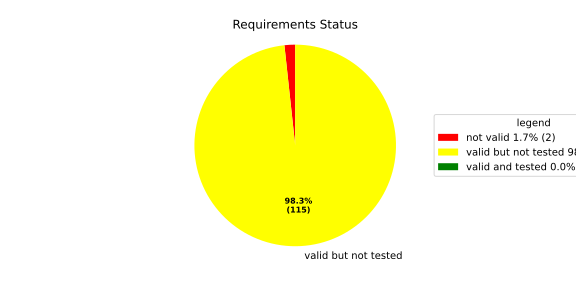
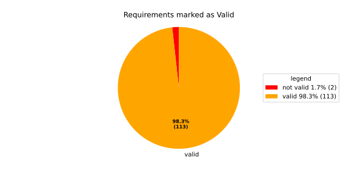
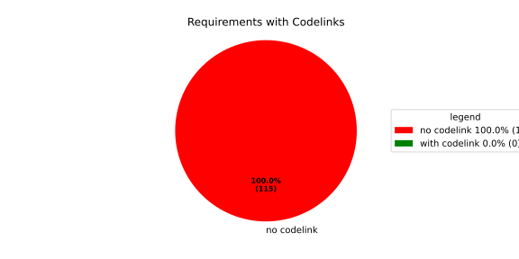

Component Requirements Statistics#
Overview#

In Detail#


No needs passed the filters
Failed Tests
Hint: This table should be empty. Before a PR can be merged all tests have to be successful.
No needs passed the filters
Skipped / Disabled Tests
No needs passed the filters
All passed Tests#
No needs passed the filters
Details About Testcases#
No needs passed the filters
No needs passed the filters
Test Log Files#
tests-report/score/health_monitor/src/rust/tests/test.log
exec ${PAGER:-/usr/bin/less} "$0" || exit 1
Executing tests from //score/health_monitor/src/rust:tests
-----------------------------------------------------------------------------
running 232 tests
test common::tests::duration_to_int_valid ... ok
test common::tests::duration_to_int_too_large - should panic ... ok
test common::tests::time_offset_diff_too_large - should panic ... ok
test common::tests::time_offset_wrong_order ... ok
test common::tests::time_offset_valid ... ok
test common::tests::time_range_from_interval_lower_too_large - should panic ... ok
test common::tests::time_range_new_valid ... ok
test common::tests::time_range_from_interval_valid ... ok
test common::tests::time_range_new_wrong_order - should panic ... ok
test deadline::common::tests::acquire_and_release_deadline ... ok
test deadline::common::tests::new_and_fields ... ok
test deadline::deadline_monitor::tests::deadline_failed_on_first_run_and_then_restarted_is_evaluated_as_error ... ok
test deadline::deadline_monitor::tests::get_deadline_unknown_tag ... ok
test deadline::common::tests::concurrent_acquire ... ok
test deadline::deadline_monitor::tests::start_stop_deadline_outside_ranges_is_error_when_dropped_before_evaluate ... ok
test deadline::deadline_monitor::tests::deadline_outside_time_range_is_error_when_dropped_after_evaluate ... ok
test deadline::deadline_monitor::tests::start_stop_deadline_outside_ranges_is_evaluated_as_error ... ok
test deadline::deadline_state::tests::as_u64_and_new ... ok
test deadline::deadline_state::tests::deadline_state_default_and_snapshot ... ok
test deadline::deadline_state::tests::deadline_state_update_none_returns_err ... ok
test deadline::deadline_state::tests::deadline_state_update_success ... ok
test deadline::deadline_state::tests::set_and_get_timestamp_ms ... ok
test deadline::deadline_state::tests::set_running ... ok
test deadline::deadline_state::tests::set_underrun ... ok
test deadline::ffi::tests::deadline_destroy_null_deadline ... ok
test deadline::ffi::tests::deadline_monitor_builder_add_deadline_invalid_range ... ok
test deadline::deadline_state::tests::default_state ... ok
test deadline::ffi::tests::deadline_monitor_builder_add_deadline_null_builder ... ok
test deadline::ffi::tests::deadline_monitor_builder_add_deadline_null_deadline_tag ... ok
test deadline::ffi::tests::deadline_monitor_builder_create_null_builder ... ok
test deadline::ffi::tests::deadline_monitor_builder_add_deadline_succeeds ... ok
test deadline::ffi::tests::deadline_monitor_builder_create_succeeds ... ok
test deadline::ffi::tests::deadline_monitor_builder_destroy_null_builder ... ok
test deadline::ffi::tests::deadline_monitor_destroy_null_monitor ... ok
test deadline::ffi::tests::deadline_monitor_get_deadline_null_deadline_handle ... ok
test deadline::ffi::tests::deadline_monitor_get_deadline_null_deadline_tag ... ok
test deadline::ffi::tests::deadline_monitor_get_deadline_null_monitor ... ok
test deadline::ffi::tests::deadline_monitor_get_deadline_succeeds ... ok
test deadline::ffi::tests::deadline_monitor_get_deadline_unknown_deadline ... ok
test deadline::ffi::tests::deadline_start_null_deadline ... ok
test deadline::ffi::tests::deadline_start_already_started ... ok
test deadline::ffi::tests::deadline_start_succeeds ... ok
test deadline::ffi::tests::deadline_stop_null_deadline ... ok
test deadline::ffi::tests::deadline_stop_succeeds ... ok
test ffi::tests::health_monitor_builder_add_deadline_monitor_null_hmon_builder ... ok
test ffi::tests::health_monitor_builder_add_deadline_monitor_null_monitor_tag ... ok
test ffi::tests::health_monitor_builder_add_deadline_monitor_succeeds ... ok
test ffi::tests::health_monitor_builder_add_heartbeat_monitor_null_heartbeat_monitor_builder ... ok
test ffi::tests::health_monitor_builder_add_heartbeat_monitor_null_hmon_builder ... ok
test ffi::tests::health_monitor_builder_add_heartbeat_monitor_null_monitor_tag ... ok
test ffi::tests::health_monitor_builder_add_deadline_monitor_null_deadline_monitor_builder ... ok
test ffi::tests::health_monitor_builder_add_logic_monitor_null_hmon_builder ... ok
test ffi::tests::health_monitor_builder_add_heartbeat_monitor_succeeds ... ok
test ffi::tests::health_monitor_builder_add_logic_monitor_null_logic_monitor_builder ... ok
test ffi::tests::health_monitor_builder_add_logic_monitor_null_monitor_tag ... ok
test ffi::tests::health_monitor_builder_add_logic_monitor_succeeds ... ok
test ffi::tests::health_monitor_builder_build_invalid_cycle_intervals ... ok
test ffi::tests::health_monitor_builder_build_no_monitors ... ok
test ffi::tests::health_monitor_builder_build_null_builder_handle ... ok
test ffi::tests::health_monitor_builder_build_null_monitor_handle ... ok
test ffi::tests::health_monitor_builder_build_succeeds ... ok
test ffi::tests::health_monitor_builder_build_thread_parameters ... ok
test ffi::tests::health_monitor_builder_create_null_handle ... ok
test ffi::tests::health_monitor_builder_create_succeeds ... ok
test ffi::tests::health_monitor_builder_destroy_null_handle ... ok
test ffi::tests::health_monitor_destroy_null_hmon ... ok
test ffi::tests::health_monitor_get_deadline_monitor_already_taken ... ok
test ffi::tests::health_monitor_get_deadline_monitor_null_deadline_monitor ... ok
test ffi::tests::health_monitor_get_deadline_monitor_null_hmon ... ok
test ffi::tests::health_monitor_get_deadline_monitor_null_monitor_tag ... ok
test ffi::tests::health_monitor_get_deadline_monitor_succeeds ... ok
test ffi::tests::health_monitor_builder_build_valid_cycle_intervals_succeeds ... ok
test ffi::tests::health_monitor_get_heartbeat_monitor_already_taken ... ok
test ffi::tests::health_monitor_get_heartbeat_monitor_null_heartbeat_monitor ... ok
test ffi::tests::health_monitor_get_heartbeat_monitor_null_monitor_tag ... ok
test ffi::tests::health_monitor_get_heartbeat_monitor_null_hmon ... ok
test ffi::tests::health_monitor_get_heartbeat_monitor_succeeds ... ok
test ffi::tests::health_monitor_get_logic_monitor_already_taken ... ok
test ffi::tests::health_monitor_get_logic_monitor_null_logic_monitor ... ok
test ffi::tests::health_monitor_get_logic_monitor_null_hmon ... ok
test ffi::tests::health_monitor_get_logic_monitor_null_monitor_tag ... ok
test ffi::tests::health_monitor_get_logic_monitor_succeeds ... ok
test ffi::tests::health_monitor_start_monitor_not_taken ... ok
[2026/06/02 08:29:55.3998567][12675][HMON][INFO] Monitoring thread started.
[2026/06/02 08:29:55.3998928][12675][HMON][INFO] Monitoring thread exiting.
test ffi::tests::health_monitor_start_null_hmon ... ok
test ffi::tests::health_monitor_start_succeeds ... ok
test health_monitor::tests::health_monitor_builder_build_invalid_cycles ... ok
test health_monitor::tests::health_monitor_builder_build_no_monitors ... ok
test health_monitor::tests::health_monitor_builder_build_succeeds ... ok
test health_monitor::tests::health_monitor_builder_new_succeeds ... ok
test health_monitor::tests::health_monitor_get_deadline_monitor_available ... ok
test health_monitor::tests::health_monitor_get_deadline_monitor_invalid_state ... ok
test health_monitor::tests::health_monitor_get_deadline_monitor_taken ... ok
test health_monitor::tests::health_monitor_get_deadline_monitor_unknown ... ok
test health_monitor::tests::health_monitor_get_heartbeat_monitor_available ... ok
test health_monitor::tests::health_monitor_get_heartbeat_monitor_invalid_state ... ok
test health_monitor::tests::health_monitor_get_heartbeat_monitor_taken ... ok
test health_monitor::tests::health_monitor_get_heartbeat_monitor_unknown ... ok
test health_monitor::tests::health_monitor_get_logic_monitor_available ... ok
test health_monitor::tests::health_monitor_get_logic_monitor_invalid_state ... ok
test health_monitor::tests::health_monitor_get_logic_monitor_taken ... ok
test health_monitor::tests::health_monitor_get_logic_monitor_unknown ... ok
[2026/06/02 08:29:55.4027414][12675][HMON][INFO] Monitoring thread started.
[2026/06/02 08:29:55.4027546][12675][HMON][INFO] Monitoring thread exiting.
test health_monitor::tests::health_monitor_start_monitors_not_taken - should panic ... ok
test health_monitor::tests::health_monitor_start_succeeds ... ok
test heartbeat::ffi::tests::heartbeat_monitor_builder_create_invalid_range ... ok
test heartbeat::ffi::tests::heartbeat_monitor_builder_create_null_builder ... ok
test heartbeat::ffi::tests::heartbeat_monitor_builder_create_succeeds ... ok
test heartbeat::ffi::tests::heartbeat_monitor_destroy_null_monitor ... ok
test heartbeat::ffi::tests::heartbeat_monitor_builder_destroy_null_builder ... ok
test heartbeat::ffi::tests::heartbeat_monitor_heartbeat_null_monitor ... ok
test heartbeat::ffi::tests::heartbeat_monitor_heartbeat_succeeds ... ok
test deadline::deadline_monitor::tests::monitor_with_multiple_running_deadlines ... ok
test heartbeat::heartbeat_monitor::tests::heartbeat_monitor_beat_early_evaluate_early ... ok
test heartbeat::heartbeat_monitor::tests::heartbeat_monitor_beat_early_evaluate_in_range ... ok
test heartbeat::heartbeat_monitor::tests::heartbeat_monitor_beat_in_range_evaluate_in_range ... ok
test heartbeat::heartbeat_monitor::tests::heartbeat_monitor_beat_early_evaluate_late ... ok
test heartbeat::heartbeat_monitor::tests::heartbeat_monitor_builder_build_invalid_internal_processing_cycle ... ok
test heartbeat::heartbeat_monitor::tests::heartbeat_monitor_builder_build_ok ... ok
test heartbeat::heartbeat_monitor::tests::heartbeat_monitor_beat_in_range_evaluate_late ... ok
test heartbeat::heartbeat_monitor::tests::heartbeat_monitor_beat_late_evaluate_late ... ok
test heartbeat::heartbeat_monitor::tests::heartbeat_monitor_cycle_early ... ok
test heartbeat::heartbeat_monitor::tests::heartbeat_monitor_multiple_beats_early_evaluate_early ... ok
test heartbeat::heartbeat_monitor::tests::heartbeat_monitor_cycle_in_range ... ok
test heartbeat::heartbeat_monitor::tests::heartbeat_monitor_multiple_beats_early_evaluate_in_range ... ok
test heartbeat::heartbeat_monitor::tests::heartbeat_monitor_multiple_beats_in_range_evaluate_in_range ... ok
test heartbeat::heartbeat_monitor::tests::heartbeat_monitor_cycle_late ... ok
test heartbeat::heartbeat_monitor::tests::heartbeat_monitor_multiple_beats_early_evaluate_late ... ok
test heartbeat::heartbeat_monitor::tests::heartbeat_monitor_no_beat_evaluate_early ... ok
test heartbeat::heartbeat_monitor::tests::heartbeat_monitor_no_beat_evaluate_in_range ... ok
test heartbeat::heartbeat_monitor::tests::heartbeat_monitor_multiple_beats_in_range_evaluate_late ... ok
test heartbeat::heartbeat_monitor::tests::heartbeat_monitor_multiple_beats_late_evaluate_late ... ok
test heartbeat::heartbeat_state::tests::snapshot_counter_increment ... ok
test heartbeat::heartbeat_state::tests::snapshot_default ... ok
test heartbeat::heartbeat_state::tests::snapshot_from_u64_max ... ok
test heartbeat::heartbeat_state::tests::snapshot_from_u64_valid ... ok
test heartbeat::heartbeat_state::tests::snapshot_from_u64_zero ... ok
test heartbeat::heartbeat_state::tests::snapshot_new_succeeds ... ok
test heartbeat::heartbeat_state::tests::snapshot_set_heartbeat_timestamp_out_of_range - should panic ... ok
test heartbeat::heartbeat_state::tests::snapshot_set_heartbeat_timestamp_valid ... ok
test heartbeat::heartbeat_state::tests::state_default ... ok
test heartbeat::heartbeat_state::tests::state_new ... ok
test heartbeat::heartbeat_state::tests::state_reset ... ok
test heartbeat::heartbeat_state::tests::state_snapshot ... ok
test heartbeat::heartbeat_state::tests::state_update_none ... ok
test heartbeat::heartbeat_state::tests::state_update_some ... ok
test logic::ffi::tests::logic_monitor_builder_add_state_null_allowed_states_many_elements ... ok
test logic::ffi::tests::logic_monitor_builder_add_state_null_allowed_states_zero_elements ... ok
test logic::ffi::tests::logic_monitor_builder_add_state_null_builder ... ok
test logic::ffi::tests::logic_monitor_builder_add_state_null_tag ... ok
test logic::ffi::tests::logic_monitor_builder_add_state_succeeds ... ok
test logic::ffi::tests::logic_monitor_builder_create_null_builder ... ok
test logic::ffi::tests::logic_monitor_builder_create_null_initial_state ... ok
test logic::ffi::tests::logic_monitor_builder_create_succeeds ... ok
test logic::ffi::tests::logic_monitor_builder_destroy_null_builder ... ok
test logic::ffi::tests::logic_monitor_destroy_null_monitor ... ok
test logic::ffi::tests::logic_monitor_state_fails ... ok
test logic::ffi::tests::logic_monitor_state_null_monitor ... ok
test logic::ffi::tests::logic_monitor_state_null_state ... ok
test logic::ffi::tests::logic_monitor_state_succeeds ... ok
test logic::ffi::tests::logic_monitor_transition_fails ... ok
test logic::ffi::tests::logic_monitor_transition_null_monitor ... ok
test logic::ffi::tests::logic_monitor_transition_null_target_state ... ok
test logic::ffi::tests::logic_monitor_transition_succeeds ... ok
test logic::logic_monitor::tests::logic_monitor_builder_build_no_states ... ok
test logic::logic_monitor::tests::logic_monitor_builder_build_succeeds ... ok
test logic::logic_monitor::tests::logic_monitor_builder_build_undefined_initial_state ... ok
test logic::logic_monitor::tests::logic_monitor_builder_build_undefined_target ... ok
test logic::logic_monitor::tests::logic_monitor_builder_new_succeeds ... ok
test logic::logic_monitor::tests::logic_monitor_evaluate_invalid_state ... ok
test logic::logic_monitor::tests::logic_monitor_evaluate_invalid_transition ... ok
test logic::logic_monitor::tests::logic_monitor_evaluate_succeeds ... ok
test logic::logic_monitor::tests::logic_monitor_state_indeterminate_current_state ... ok
test logic::logic_monitor::tests::logic_monitor_state_succeeds ... ok
test logic::logic_monitor::tests::logic_monitor_transition_indeterminate_current_state ... ok
test logic::logic_monitor::tests::logic_monitor_transition_invalid_transition ... ok
test logic::logic_monitor::tests::logic_monitor_transition_succeeds ... ok
test logic::logic_monitor::tests::logic_monitor_transition_unknown_node ... ok
test logic::logic_state::tests::snapshot_from_u64_max ... ok
test logic::logic_state::tests::snapshot_from_u64_valid ... ok
test logic::logic_state::tests::snapshot_from_u64_zero ... ok
test logic::logic_state::tests::snapshot_new_succeeds ... ok
test logic::logic_state::tests::snapshot_set_current_state_index_valid ... ok
test logic::logic_state::tests::snapshot_set_heartbeat_timestamp_out_of_range - should panic ... ok
test logic::logic_state::tests::snapshot_set_monitor_status_valid ... ok
test logic::logic_state::tests::state_new ... ok
test logic::logic_state::tests::state_snapshot ... ok
test logic::logic_state::tests::state_swap ... ok
test tag::tests::deadline_tag_debug ... ok
test tag::tests::deadline_tag_from_str ... ok
test tag::tests::deadline_tag_from_string ... ok
test tag::tests::deadline_tag_new ... ok
test tag::tests::deadline_tag_score_debug ... ok
test tag::tests::monitor_tag_debug ... ok
test tag::tests::monitor_tag_from_str ... ok
test tag::tests::monitor_tag_from_string ... ok
test tag::tests::monitor_tag_new ... ok
test tag::tests::monitor_tag_score_debug ... ok
test tag::tests::state_tag_debug ... ok
test tag::tests::state_tag_from_str ... ok
test tag::tests::state_tag_from_string ... ok
test tag::tests::state_tag_new ... ok
test tag::tests::state_tag_score_debug ... ok
test tag::tests::tag_debug ... ok
test tag::tests::tag_hash_is_eq ... ok
test tag::tests::tag_hash_is_ne ... ok
test tag::tests::tag_new ... ok
test tag::tests::tag_partial_eq_is_eq ... ok
test tag::tests::tag_partial_eq_is_ne ... ok
test tag::tests::tag_score_debug ... ok
test tag::tests::test_from_str ... ok
test tag::tests::test_from_string ... ok
test thread_ffi::tests::scheduler_policy_priority_max_null_priority ... ok
test thread_ffi::tests::scheduler_policy_priority_max_succeeds ... ok
test thread_ffi::tests::scheduler_policy_priority_min_null_priority ... ok
test thread_ffi::tests::scheduler_policy_priority_min_succeeds ... ok
test thread_ffi::tests::thread_parameters_affinity_null_affinity_many_elements ... ok
test thread_ffi::tests::thread_parameters_affinity_null_affinity_zero_elements ... ok
test thread_ffi::tests::thread_parameters_affinity_null_handle ... ok
test thread_ffi::tests::thread_parameters_affinity_succeeds ... ok
test thread_ffi::tests::thread_parameters_create_succeeds ... ok
test thread_ffi::tests::thread_parameters_destroy_null_handle ... ok
test thread_ffi::tests::thread_parameters_scheduler_parameters_invalid_priority ... ok
test thread_ffi::tests::thread_parameters_scheduler_parameters_null_handle ... ok
test thread_ffi::tests::thread_parameters_scheduler_parameters_succeeds ... ok
test thread_ffi::tests::thread_parameters_stack_size_null_handle ... ok
test thread_ffi::tests::thread_parameters_stack_size_succeeds ... ok
test worker::tests::monitoring_logic_report_alive_on_each_call_when_no_error ... ok
test heartbeat::heartbeat_monitor::tests::heartbeat_monitor_no_beat_evaluate_late ... ok
test deadline::deadline_monitor::tests::start_stop_deadline_within_range_works ... ok
[2026/06/02 08:29:56.4021143][12675][HMON][INFO] Monitoring thread started.
test worker::tests::monitoring_logic_report_error_when_deadline_failed ... ok
test worker::tests::monitoring_logic_report_alive_respect_cycle ... ok
[2026/06/02 08:29:56.4625651][12675][HMON][WARN] Deadline (DeadlineTag(deadline_fast)) missed! Expected: 50, now: 60
[2026/06/02 08:29:56.4625828][12675][HMON][WARN] Deadline monitor with tag MonitorTag(deadline_monitor) reported error: TooLate.
[2026/06/02 08:29:56.4625908][12675][HMON][WARN] One or more monitors reported errors, skipping AliveAPI notification.
[2026/06/02 08:29:56.4625971][12675][HMON][INFO] Monitoring logic failed, stopping thread.
[2026/06/02 08:29:56.4626030][12675][HMON][INFO] Monitoring thread exiting.
test worker::tests::unique_thread_runner_monitoring_works ... ok
test heartbeat::heartbeat_monitor::tests::heartbeat_monitor_timestamp_offset ... ok
test result: ok. 232 passed; 0 failed; 0 ignored; 0 measured; 0 filtered out; finished in 1.27s
tests-report/score/health_monitor/src/rust/loom_tests/test.log
exec ${PAGER:-/usr/bin/less} "$0" || exit 1
Executing tests from //score/health_monitor/src/rust:loom_tests
-----------------------------------------------------------------------------
running 3 tests
test heartbeat::heartbeat_monitor::loom_tests::heartbeat_monitor_heartbeat_evaluate_too_early ... ok
test heartbeat::heartbeat_monitor::loom_tests::heartbeat_monitor_heartbeat_evaluate_in_range ... ok
test heartbeat::heartbeat_monitor::loom_tests::heartbeat_monitor_heartbeat_evaluate_too_late ... ok
test result: ok. 3 passed; 0 failed; 0 ignored; 0 measured; 0 filtered out; finished in 0.70s
tests-report/score/health_monitor/src/cpp/cpp_tests/test.log
exec ${PAGER:-/usr/bin/less} "$0" || exit 1
Executing tests from //score/health_monitor/src/cpp:cpp_tests
-----------------------------------------------------------------------------
Running main() from gmock_main.cc
[==========] Running 1 test from 1 test suite.
[----------] Global test environment set-up.
[----------] 1 test from HealthMonitorTest
[ RUN ] HealthMonitorTest.TestName
[2026/06/02 08:29:53.5739838][score/health_monitor/src/rust/worker.rs:121][12611][HMON][INFO] Monitoring thread started.
[2026/06/02 08:29:53.5760441][score/health_monitor/src/rust/deadline/deadline_monitor.rs:217][12611][HMON][ERROR] Deadline DeadlineTag(deadline_1) stopped too early by 100 ms
[2026/06/02 08:29:53.6241439][score/health_monitor/src/rust/deadline/deadline_monitor.rs:267][12611][HMON][WARN] Deadline (DeadlineTag(deadline_1)) finished too early!
[2026/06/02 08:29:53.6241777][score/health_monitor/src/rust/worker.rs:58][12611][HMON][WARN] Deadline monitor with tag MonitorTag(deadline_monitor) reported error: TooEarly.
[2026/06/02 08:29:53.6241913][score/health_monitor/src/rust/heartbeat/heartbeat_monitor.rs:253][12611][HMON][WARN] Heartbeat occurred too early, offset to range: 98
[2026/06/02 08:29:53.6241992][score/health_monitor/src/rust/worker.rs:64][12611][HMON][WARN] Heartbeat monitor with tag MonitorTag(heartbeat_monitor) reported error: TooEarly.
[2026/06/02 08:29:53.6242078][score/health_monitor/src/rust/worker.rs:85][12611][HMON][WARN] One or more monitors reported errors, skipping AliveAPI notification.
[2026/06/02 08:29:53.6242143][score/health_monitor/src/rust/worker.rs:132][12611][HMON][INFO] Monitoring logic failed, stopping thread.
[2026/06/02 08:29:53.6242204][score/health_monitor/src/rust/worker.rs:139][12611][HMON][INFO] Monitoring thread exiting.
[ OK ] HealthMonitorTest.TestName (51 ms)
[----------] 1 test from HealthMonitorTest (51 ms total)
[----------] Global test environment tear-down
[==========] 1 test from 1 test suite ran. (51 ms total)
[ PASSED ] 1 test.
tests-report/score/launch_manager/daemon/src/process_state_client/process_state_client_ut/test.log
exec ${PAGER:-/usr/bin/less} "$0" || exit 1
Executing tests from //score/launch_manager/daemon/src/process_state_client:process_state_client_ut
-----------------------------------------------------------------------------
Running main() from gmock_main.cc
[==========] Running 4 tests from 1 test suite.
[----------] Global test environment set-up.
[----------] 4 tests from ProcessStateClient_UT
[ RUN ] ProcessStateClient_UT.ProcessStateClient_ConstructReceiver_Succeeds
[ OK ] ProcessStateClient_UT.ProcessStateClient_ConstructReceiver_Succeeds (0 ms)
[ RUN ] ProcessStateClient_UT.ProcessStateClient_QueueOneProcess_Succeeds
[ OK ] ProcessStateClient_UT.ProcessStateClient_QueueOneProcess_Succeeds (0 ms)
[ RUN ] ProcessStateClient_UT.ProcessStateClient_QueueMaxNumberOfProcesses_Succeeds
[ OK ] ProcessStateClient_UT.ProcessStateClient_QueueMaxNumberOfProcesses_Succeeds (14 ms)
[ RUN ] ProcessStateClient_UT.ProcessStateClient_QueueOneProcessTooMany_Fails
mw::log initialization error: Error No logging configuration files could be found. occurred with context information: Failed to load configuration files. Fallback to console logging.
2026/06/02 08:27:56.8876553 2577673 000 ECU1 NONE LM log error verbose 1 Failed to queue posix process
2026/06/02 08:27:56.8876553 2577676 000 ECU1 NONE LM log error verbose 1 ProcessStateReceiver::getNextChangedPosixProcess: Overflow occurred, will be reported as kCommunicationError
[ OK ] ProcessStateClient_UT.ProcessStateClient_QueueOneProcessTooMany_Fails (7 ms)
[----------] 4 tests from ProcessStateClient_UT (23 ms total)
[----------] Global test environment tear-down
[==========] 4 tests from 1 test suite ran. (23 ms total)
[ PASSED ] 4 tests.
tests-report/score/launch_manager/daemon/src/recovery_client/recovery_client_UT/test.log
exec ${PAGER:-/usr/bin/less} "$0" || exit 1
Executing tests from //score/launch_manager/daemon/src/recovery_client:recovery_client_UT
-----------------------------------------------------------------------------
Running main() from gmock_main.cc
[==========] Running 5 tests from 1 test suite.
[----------] Global test environment set-up.
[----------] 5 tests from RecoveryClientTest
[ RUN ] RecoveryClientTest.SendSingleRequest
[ OK ] RecoveryClientTest.SendSingleRequest (0 ms)
[ RUN ] RecoveryClientTest.GetNextRequest
[ OK ] RecoveryClientTest.GetNextRequest (0 ms)
[ RUN ] RecoveryClientTest.GetNextRequestEmpty
[ OK ] RecoveryClientTest.GetNextRequestEmpty (0 ms)
[ RUN ] RecoveryClientTest.RingBufferFull
[ OK ] RecoveryClientTest.RingBufferFull (0 ms)
[ RUN ] RecoveryClientTest.FIFOOrdering
[ OK ] RecoveryClientTest.FIFOOrdering (0 ms)
[----------] 5 tests from RecoveryClientTest (0 ms total)
[----------] Global test environment tear-down
[==========] 5 tests from 1 test suite ran. (0 ms total)
[ PASSED ] 5 tests.
tests-report/score/launch_manager/daemon/src/alive_monitor/details/recovery/Notification_UT/test.log
exec ${PAGER:-/usr/bin/less} "$0" || exit 1
Executing tests from //score/launch_manager/daemon/src/alive_monitor/details/recovery:Notification_UT
-----------------------------------------------------------------------------
Running main() from gmock_main.cc
[==========] Running 5 tests from 2 test suites.
[----------] Global test environment set-up.
[----------] 4 tests from NotificationWithConfigTest
[ RUN ] NotificationWithConfigTest.CanGetNotificationName
mw::log initialization error: Error No logging configuration files could be found. occurred with context information: Failed to load configuration files. Fallback to console logging.
[ OK ] NotificationWithConfigTest.CanGetNotificationName (2 ms)
[ RUN ] NotificationWithConfigTest.SendsRequestAndNeverTimesOut
[ OK ] NotificationWithConfigTest.SendsRequestAndNeverTimesOut (0 ms)
[ RUN ] NotificationWithConfigTest.TimesOutWhenSendingRequestFails
2026/06/02 08:27:55.8875699 2569134 000 ECU1 NONE Rcvy log error verbose 2 Notification (TestNotification) Failed to enqueue recovery request (ring buffer full)
[ OK ] NotificationWithConfigTest.TimesOutWhenSendingRequestFails (0 ms)
[ RUN ] NotificationWithConfigTest.ProxyInitializationFails
2026/06/02 08:27:55.8875699 2569136 000 ECU1 NONE Rcvy log error verbose 3 Notification (TestNotification) Invalid ProcessGroupState identifier: InvalidIdentifier
[ OK ] NotificationWithConfigTest.ProxyInitializationFails (0 ms)
[----------] 4 tests from NotificationWithConfigTest (3 ms total)
[----------] 1 test from NotificationWithoutConfigTest
[ RUN ] NotificationWithoutConfigTest.WatchdogNotificationGoesDirectlyToTimeout
[ OK ] NotificationWithoutConfigTest.WatchdogNotificationGoesDirectlyToTimeout (0 ms)
[----------] 1 test from NotificationWithoutConfigTest (0 ms total)
[----------] Global test environment tear-down
[==========] 5 tests from 2 test suites ran. (3 ms total)
[ PASSED ] 5 tests.
tests-report/score/launch_manager/daemon/src/common/identifier_hash_UT/test.log
exec ${PAGER:-/usr/bin/less} "$0" || exit 1
Executing tests from //score/launch_manager/daemon/src/common:identifier_hash_UT
-----------------------------------------------------------------------------
Running main() from gmock_main.cc
[==========] Running 7 tests from 1 test suite.
[----------] Global test environment set-up.
[----------] 7 tests from IdentifierHashTest
[ RUN ] IdentifierHashTest.IdentifierHash_with_string_view_created
[ OK ] IdentifierHashTest.IdentifierHash_with_string_view_created (0 ms)
[ RUN ] IdentifierHashTest.IdentifierHash_with_string_created
[ OK ] IdentifierHashTest.IdentifierHash_with_string_created (0 ms)
[ RUN ] IdentifierHashTest.IdentifierHash_default_created
[ OK ] IdentifierHashTest.IdentifierHash_default_created (0 ms)
[ RUN ] IdentifierHashTest.IdentifierHash_invalid_hash_no_string_representation
[ OK ] IdentifierHashTest.IdentifierHash_invalid_hash_no_string_representation (0 ms)
[ RUN ] IdentifierHashTest.IdentifierHash_no_dangling_pointer_after_source_string_dies
[ OK ] IdentifierHashTest.IdentifierHash_no_dangling_pointer_after_source_string_dies (0 ms)
[ RUN ] IdentifierHashTest.IdentifierHash_EqualityOperators
[ OK ] IdentifierHashTest.IdentifierHash_EqualityOperators (0 ms)
[ RUN ] IdentifierHashTest.IdentifierHash_LessThanOperator
[ OK ] IdentifierHashTest.IdentifierHash_LessThanOperator (0 ms)
[----------] 7 tests from IdentifierHashTest (0 ms total)
[----------] Global test environment tear-down
[==========] 7 tests from 1 test suite ran. (0 ms total)
[ PASSED ] 7 tests.
tests-report/score/launch_manager/daemon/src/common/concurrency/mpmc_concurrent_queue_tsan_test/test.log
exec ${PAGER:-/usr/bin/less} "$0" || exit 1
Executing tests from //score/launch_manager/daemon/src/common/concurrency:mpmc_concurrent_queue_tsan_test
-----------------------------------------------------------------------------
Running main() from gmock_main.cc
[==========] Running 15 tests from 5 test suites.
[----------] Global test environment set-up.
[----------] 5 tests from MPMCConcurrentQueueTest_Basic
[ RUN ] MPMCConcurrentQueueTest_Basic.PushAndPopSingleItem
[ OK ] MPMCConcurrentQueueTest_Basic.PushAndPopSingleItem (0 ms)
[ RUN ] MPMCConcurrentQueueTest_Basic.PushAndPopPreservesOrder
[ OK ] MPMCConcurrentQueueTest_Basic.PushAndPopPreservesOrder (0 ms)
[ RUN ] MPMCConcurrentQueueTest_Basic.LvaluePushCopiesItem
[ OK ] MPMCConcurrentQueueTest_Basic.LvaluePushCopiesItem (0 ms)
[ RUN ] MPMCConcurrentQueueTest_Basic.RvaluePushWorksWithMoveOnlyType
[ OK ] MPMCConcurrentQueueTest_Basic.RvaluePushWorksWithMoveOnlyType (0 ms)
[ RUN ] MPMCConcurrentQueueTest_Basic.PopReturnsNulloptOnSemaphoreWaitFailure
[ OK ] MPMCConcurrentQueueTest_Basic.PopReturnsNulloptOnSemaphoreWaitFailure (21 ms)
[----------] 5 tests from MPMCConcurrentQueueTest_Basic (21 ms total)
[----------] 2 tests from MPMCConcurrentQueueTest_Timeout
[ RUN ] MPMCConcurrentQueueTest_Timeout.PushWithTimeoutSucceedsWhenSlotAvailable
[ OK ] MPMCConcurrentQueueTest_Timeout.PushWithTimeoutSucceedsWhenSlotAvailable (0 ms)
[ RUN ] MPMCConcurrentQueueTest_Timeout.PushWithTimeoutReturnsFalseWhenFull
[ OK ] MPMCConcurrentQueueTest_Timeout.PushWithTimeoutReturnsFalseWhenFull (21 ms)
[----------] 2 tests from MPMCConcurrentQueueTest_Timeout (21 ms total)
[----------] 3 tests from MPMCConcurrentQueueTest_Stop
[ RUN ] MPMCConcurrentQueueTest_Stop.PushReturnsFalseAfterStop
[ OK ] MPMCConcurrentQueueTest_Stop.PushReturnsFalseAfterStop (0 ms)
[ RUN ] MPMCConcurrentQueueTest_Stop.PopReturnsNulloptWhenStoppedAndEmpty
[ OK ] MPMCConcurrentQueueTest_Stop.PopReturnsNulloptWhenStoppedAndEmpty (0 ms)
[ RUN ] MPMCConcurrentQueueTest_Stop.ItemsAreDroppedAfterStop
[ OK ] MPMCConcurrentQueueTest_Stop.ItemsAreDroppedAfterStop (0 ms)
[----------] 3 tests from MPMCConcurrentQueueTest_Stop (0 ms total)
[----------] 4 tests from MPMCConcurrentQueueTest_Blocking
[ RUN ] MPMCConcurrentQueueTest_Blocking.PopBlocksUntilItemAvailable
[ OK ] MPMCConcurrentQueueTest_Blocking.PopBlocksUntilItemAvailable (0 ms)
[ RUN ] MPMCConcurrentQueueTest_Blocking.PushBlocksWhenFull
[ OK ] MPMCConcurrentQueueTest_Blocking.PushBlocksWhenFull (0 ms)
[ RUN ] MPMCConcurrentQueueTest_Blocking.StopUnblocksBlockedConsumer
[ OK ] MPMCConcurrentQueueTest_Blocking.StopUnblocksBlockedConsumer (0 ms)
[ RUN ] MPMCConcurrentQueueTest_Blocking.StopUnblocksBlockedProducer
[ OK ] MPMCConcurrentQueueTest_Blocking.StopUnblocksBlockedProducer (0 ms)
[----------] 4 tests from MPMCConcurrentQueueTest_Blocking (1 ms total)
[----------] 1 test from MPMCConcurrentQueueTest_MPMC
[ RUN ] MPMCConcurrentQueueTest_MPMC.AllItemsDelivered
[ OK ] MPMCConcurrentQueueTest_MPMC.AllItemsDelivered (4 ms)
[----------] 1 test from MPMCConcurrentQueueTest_MPMC (4 ms total)
[----------] Global test environment tear-down
[==========] 15 tests from 5 test suites ran. (49 ms total)
[ PASSED ] 15 tests.
tests-report/score/launch_manager/daemon/src/common/concurrency/mpmc_concurrent_queue_test/test.log
exec ${PAGER:-/usr/bin/less} "$0" || exit 1
Executing tests from //score/launch_manager/daemon/src/common/concurrency:mpmc_concurrent_queue_test
-----------------------------------------------------------------------------
Running main() from gmock_main.cc
[==========] Running 15 tests from 5 test suites.
[----------] Global test environment set-up.
[----------] 5 tests from MPMCConcurrentQueueTest_Basic
[ RUN ] MPMCConcurrentQueueTest_Basic.PushAndPopSingleItem
[ OK ] MPMCConcurrentQueueTest_Basic.PushAndPopSingleItem (0 ms)
[ RUN ] MPMCConcurrentQueueTest_Basic.PushAndPopPreservesOrder
[ OK ] MPMCConcurrentQueueTest_Basic.PushAndPopPreservesOrder (0 ms)
[ RUN ] MPMCConcurrentQueueTest_Basic.LvaluePushCopiesItem
[ OK ] MPMCConcurrentQueueTest_Basic.LvaluePushCopiesItem (0 ms)
[ RUN ] MPMCConcurrentQueueTest_Basic.RvaluePushWorksWithMoveOnlyType
[ OK ] MPMCConcurrentQueueTest_Basic.RvaluePushWorksWithMoveOnlyType (0 ms)
[ RUN ] MPMCConcurrentQueueTest_Basic.PopReturnsNulloptOnSemaphoreWaitFailure
[ OK ] MPMCConcurrentQueueTest_Basic.PopReturnsNulloptOnSemaphoreWaitFailure (23 ms)
[----------] 5 tests from MPMCConcurrentQueueTest_Basic (23 ms total)
[----------] 2 tests from MPMCConcurrentQueueTest_Timeout
[ RUN ] MPMCConcurrentQueueTest_Timeout.PushWithTimeoutSucceedsWhenSlotAvailable
[ OK ] MPMCConcurrentQueueTest_Timeout.PushWithTimeoutSucceedsWhenSlotAvailable (0 ms)
[ RUN ] MPMCConcurrentQueueTest_Timeout.PushWithTimeoutReturnsFalseWhenFull
[ OK ] MPMCConcurrentQueueTest_Timeout.PushWithTimeoutReturnsFalseWhenFull (21 ms)
[----------] 2 tests from MPMCConcurrentQueueTest_Timeout (21 ms total)
[----------] 3 tests from MPMCConcurrentQueueTest_Stop
[ RUN ] MPMCConcurrentQueueTest_Stop.PushReturnsFalseAfterStop
[ OK ] MPMCConcurrentQueueTest_Stop.PushReturnsFalseAfterStop (0 ms)
[ RUN ] MPMCConcurrentQueueTest_Stop.PopReturnsNulloptWhenStoppedAndEmpty
[ OK ] MPMCConcurrentQueueTest_Stop.PopReturnsNulloptWhenStoppedAndEmpty (0 ms)
[ RUN ] MPMCConcurrentQueueTest_Stop.ItemsAreDroppedAfterStop
[ OK ] MPMCConcurrentQueueTest_Stop.ItemsAreDroppedAfterStop (0 ms)
[----------] 3 tests from MPMCConcurrentQueueTest_Stop (0 ms total)
[----------] 4 tests from MPMCConcurrentQueueTest_Blocking
[ RUN ] MPMCConcurrentQueueTest_Blocking.PopBlocksUntilItemAvailable
[ OK ] MPMCConcurrentQueueTest_Blocking.PopBlocksUntilItemAvailable (0 ms)
[ RUN ] MPMCConcurrentQueueTest_Blocking.PushBlocksWhenFull
[ OK ] MPMCConcurrentQueueTest_Blocking.PushBlocksWhenFull (0 ms)
[ RUN ] MPMCConcurrentQueueTest_Blocking.StopUnblocksBlockedConsumer
[ OK ] MPMCConcurrentQueueTest_Blocking.StopUnblocksBlockedConsumer (0 ms)
[ RUN ] MPMCConcurrentQueueTest_Blocking.StopUnblocksBlockedProducer
[ OK ] MPMCConcurrentQueueTest_Blocking.StopUnblocksBlockedProducer (0 ms)
[----------] 4 tests from MPMCConcurrentQueueTest_Blocking (1 ms total)
[----------] 1 test from MPMCConcurrentQueueTest_MPMC
[ RUN ] MPMCConcurrentQueueTest_MPMC.AllItemsDelivered
[ OK ] MPMCConcurrentQueueTest_MPMC.AllItemsDelivered (6 ms)
[----------] 1 test from MPMCConcurrentQueueTest_MPMC (6 ms total)
[----------] Global test environment tear-down
[==========] 15 tests from 5 test suites ran. (52 ms total)
[ PASSED ] 15 tests.
tests-report/tests/integration/smoke/smoke/test.log
exec ${PAGER:-/usr/bin/less} "$0" || exit 1
Executing tests from //tests/integration/smoke:smoke
-----------------------------------------------------------------------------
============================= test session starts ==============================
platform linux -- Python 3.12.12, pytest-9.0.3, pluggy-1.5.0
rootdir: /home/runner/.bazel/sandbox/processwrapper-sandbox/828/execroot/_main/bazel-out/k8-fastbuild/bin/tests/integration/smoke/smoke.runfiles/score_itf+
configfile: pytest.ini
collected 1 item
../score_itf+::test_smoke
-------------------------------- live log setup --------------------------------
[2026-06-02 08:29:28.528] [INFO] [score.itf.plugins.docker] Executing custom image bootstrap command: tests/utils/environments/x86_64-linux/x86_64-linux.sh
[2026-06-02 08:29:28.877] [DEBUG] [docker.utils.config] Trying paths: ['/home/runner/.docker/config.json', '/home/runner/.dockercfg']
[2026-06-02 08:29:28.877] [DEBUG] [docker.utils.config] Found file at path: /home/runner/.docker/config.json
[2026-06-02 08:29:28.877] [DEBUG] [docker.auth] Found 'auths' section
[2026-06-02 08:29:28.877] [DEBUG] [docker.auth] Found entry (registry='https://index.docker.io/v1/', username='githubactions')
[2026-06-02 08:29:28.887] [DEBUG] [urllib3.connectionpool] http://localhost:None "GET /version HTTP/1.1" 200 823
[2026-06-02 08:29:28.980] [DEBUG] [urllib3.connectionpool] http://localhost:None "POST /v1.48/containers/create HTTP/1.1" 201 88
[2026-06-02 08:29:28.983] [DEBUG] [urllib3.connectionpool] http://localhost:None "GET /v1.48/containers/45e2c72ff336729a0d33299bdbe28104b3faaac7ddd8156a5a8b56a6650c20ec/json HTTP/1.1" 200 None
[2026-06-02 08:29:29.171] [DEBUG] [urllib3.connectionpool] http://localhost:None "POST /v1.48/containers/45e2c72ff336729a0d33299bdbe28104b3faaac7ddd8156a5a8b56a6650c20ec/start HTTP/1.1" 204 0
[2026-06-02 08:29:29.171] [DEBUG] [docker.utils.config] Trying paths: ['/home/runner/.docker/config.json', '/home/runner/.dockercfg']
[2026-06-02 08:29:29.171] [DEBUG] [docker.utils.config] Found file at path: /home/runner/.docker/config.json
[2026-06-02 08:29:29.176] [DEBUG] [docker.auth] Found 'auths' section
[2026-06-02 08:29:29.176] [DEBUG] [docker.auth] Found entry (registry='https://index.docker.io/v1/', username='githubactions')
[2026-06-02 08:29:29.195] [DEBUG] [urllib3.connectionpool] http://localhost:None "GET /version HTTP/1.1" 200 823
[2026-06-02 08:29:29.213] [DEBUG] [urllib3.connectionpool] http://localhost:None "POST /v1.48/containers/45e2c72ff336729a0d33299bdbe28104b3faaac7ddd8156a5a8b56a6650c20ec/exec HTTP/1.1" 201 74
[2026-06-02 08:29:29.219] [DEBUG] [urllib3.connectionpool] http://localhost:None "POST /v1.48/exec/a455f4890ab02251d218ff825103436699794a297291be4ca53638897b64d20a/start HTTP/1.1" 101 0
[2026-06-02 08:29:29.276] [DEBUG] [urllib3.connectionpool] http://localhost:None "GET /v1.48/exec/a455f4890ab02251d218ff825103436699794a297291be4ca53638897b64d20a/json HTTP/1.1" 200 391
[2026-06-02 08:29:29.363] [DEBUG] [urllib3.connectionpool] http://localhost:None "PUT /v1.48/containers/45e2c72ff336729a0d33299bdbe28104b3faaac7ddd8156a5a8b56a6650c20ec/archive?path=%2Ftmp HTTP/1.1" 200 0
[2026-06-02 08:29:29.371] [DEBUG] [urllib3.connectionpool] http://localhost:None "POST /v1.48/containers/45e2c72ff336729a0d33299bdbe28104b3faaac7ddd8156a5a8b56a6650c20ec/exec HTTP/1.1" 201 74
[2026-06-02 08:29:29.378] [DEBUG] [urllib3.connectionpool] http://localhost:None "POST /v1.48/exec/ea866f0771122bb0a4a17dadab1a9c643e35d5f569f45e9978edc12e18b133ed/start HTTP/1.1" 101 0
[2026-06-02 08:29:29.515] [DEBUG] [urllib3.connectionpool] http://localhost:None "GET /v1.48/exec/ea866f0771122bb0a4a17dadab1a9c643e35d5f569f45e9978edc12e18b133ed/json HTTP/1.1" 200 417
[2026-06-02 08:29:29.515] [INFO] [tests.utils.testing_utils.setup_test] Test case setup finished
-------------------------------- live log call ---------------------------------
[2026-06-02 08:29:29.526] [DEBUG] [urllib3.connectionpool] http://localhost:None "POST /v1.48/containers/45e2c72ff336729a0d33299bdbe28104b3faaac7ddd8156a5a8b56a6650c20ec/exec HTTP/1.1" 201 74
[2026-06-02 08:29:29.536] [DEBUG] [urllib3.connectionpool] http://localhost:None "POST /v1.48/exec/ad2c04c5e891b2e1a667920ae78b4eec25667009d548b498c13fd8580e0be596/start HTTP/1.1" 101 0
[2026-06-02 08:29:29.603] [DEBUG] [urllib3.connectionpool] http://localhost:None "GET /v1.48/exec/ad2c04c5e891b2e1a667920ae78b4eec25667009d548b498c13fd8580e0be596/json HTTP/1.1" 200 405
[2026-06-02 08:29:29.606] [DEBUG] [urllib3.connectionpool] http://localhost:None "POST /v1.48/containers/45e2c72ff336729a0d33299bdbe28104b3faaac7ddd8156a5a8b56a6650c20ec/exec HTTP/1.1" 201 74
[2026-06-02 08:29:29.609] [DEBUG] [urllib3.connectionpool] http://localhost:None "POST /v1.48/exec/d893599b9876c15955dea6a4dc92dea04ac025738d2979883f7571b5ade5f3c5/start HTTP/1.1" 101 0
[2026-06-02 08:29:29.720] [INFO] [launch_manager] mw::log
[2026-06-02 08:29:29.721] [INFO] [launch_manager] initialization error: Error No logging configuration files could be found. occurred with context information: Failed to load configuration files. Fallback to console logging.
[2026-06-02 08:29:29.721] [INFO] [launch_manager] 2026/06/02 08:29:29.8969677 3508917 000 ECU1 NONE Fcty log warn verbose 2 Factory for FlatCfg MachineConfig: No watchdog configured
[2026-06-02 08:29:29.722] [INFO] [launch_manager] [==========] Running 1 test from 1 test suite.
[2026-06-02 08:29:29.722] [INFO] [launch_manager] [----------] Global test environment set-up.
[2026-06-02 08:29:29.722] [INFO] [launch_manager] [----------] 1 test from Smoke
[2026-06-02 08:29:29.722] [INFO] [launch_manager] [ RUN ] Smoke.Daemon
[2026-06-02 08:29:29.722] [INFO] [launch_manager] [ STEP ] Control daemon report kRunning
[2026-06-02 08:29:29.722] [INFO] [launch_manager] [ END STEP ] Control daemon report kRunning
[2026-06-02 08:29:29.724] [DEBUG] [urllib3.connectionpool] http://localhost:None "GET /v1.48/exec/d893599b9876c15955dea6a4dc92dea04ac025738d2979883f7571b5ade5f3c5/json HTTP/1.1" 200 443
[2026-06-02 08:29:29.727] [DEBUG] [urllib3.connectionpool] http://localhost:None "POST /v1.48/containers/45e2c72ff336729a0d33299bdbe28104b3faaac7ddd8156a5a8b56a6650c20ec/exec HTTP/1.1" 201 74
[2026-06-02 08:29:29.730] [DEBUG] [urllib3.connectionpool] http://localhost:None "POST /v1.48/exec/6ff4dfdc68504c23893bd2aee92a1620b9d90abeff9197824372b1d9088c75a5/start HTTP/1.1" 101 0
[2026-06-02 08:29:29.800] [DEBUG] [urllib3.connectionpool] http://localhost:None "GET /v1.48/exec/6ff4dfdc68504c23893bd2aee92a1620b9d90abeff9197824372b1d9088c75a5/json HTTP/1.1" 200 405
[2026-06-02 08:29:29.800] [DEBUG] [tests.utils.testing_utils.run_until_file_deployed] Waiting for /tmp/tests/test_end
[2026-06-02 08:29:30.309] [DEBUG] [urllib3.connectionpool] http://localhost:None "GET /v1.48/exec/d893599b9876c15955dea6a4dc92dea04ac025738d2979883f7571b5ade5f3c5/json HTTP/1.1" 200 443
[2026-06-02 08:29:30.311] [DEBUG] [urllib3.connectionpool] http://localhost:None "POST /v1.48/containers/45e2c72ff336729a0d33299bdbe28104b3faaac7ddd8156a5a8b56a6650c20ec/exec HTTP/1.1" 201 74
[2026-06-02 08:29:30.317] [DEBUG] [urllib3.connectionpool] http://localhost:None "POST /v1.48/exec/d6cf0577b1dda8a82b5915118a6374ac2138a55fda6ce851885a61fbed383ad2/start HTTP/1.1" 101 0
[2026-06-02 08:29:30.367] [DEBUG] [urllib3.connectionpool] http://localhost:None "GET /v1.48/exec/d6cf0577b1dda8a82b5915118a6374ac2138a55fda6ce851885a61fbed383ad2/json HTTP/1.1" 200 405
[2026-06-02 08:29:30.367] [DEBUG] [tests.utils.testing_utils.run_until_file_deployed] Waiting for /tmp/tests/test_end
[2026-06-02 08:29:30.684] [INFO] [launch_manager] mw::log initialization error: Error No logging configuration files could be found. occurred with context information: Failed to load configuration files. Fallback to console logging.
[2026-06-02 08:29:30.688] [INFO] [launch_manager] [ STEP ] Activate RunTarget Running
[2026-06-02 08:29:30.689] [INFO] [launch_manager] [==========] Running 1 test from 1 test suite.
[2026-06-02 08:29:30.689] [INFO] [launch_manager] [----------] Global test environment set-up.
[2026-06-02 08:29:30.689] [INFO] [launch_manager] [----------] 1 test from Smoke
[2026-06-02 08:29:30.689] [INFO] [launch_manager] [ RUN ] Smoke.Process
[2026-06-02 08:29:30.693] [INFO] [launch_manager] [ OK ] Smoke.Process (2 ms)
[2026-06-02 08:29:30.693] [INFO] [launch_manager] [----------] 1 test from Smoke (2 ms total)
[2026-06-02 08:29:30.693] [INFO] [launch_manager] [----------] Global test environment tear-down
[2026-06-02 08:29:30.693] [INFO] [launch_manager] [==========] 1 test from 1 test suite ran. (2 ms total)
[2026-06-02 08:29:30.693] [INFO] [launch_manager] [ PASSED ] 1 test.
[2026-06-02 08:29:30.805] [INFO] [launch_manager] [ END STEP ] Activate RunTarget Running
[2026-06-02 08:29:30.805] [INFO] [launch_manager] [ STEP ] Activate RunTarget Startup
[2026-06-02 08:29:30.879] [DEBUG] [urllib3.connectionpool] http://localhost:None "GET /v1.48/exec/d893599b9876c15955dea6a4dc92dea04ac025738d2979883f7571b5ade5f3c5/json HTTP/1.1" 200 443
[2026-06-02 08:29:30.883] [INFO] [launch_manager] [ END STEP ] Activate RunTarget Startup
[2026-06-02 08:29:30.883] [INFO] [launch_manager] [ STEP ] Activate RunTarget Off
[2026-06-02 08:29:30.886] [INFO] [launch_manager] [ END STEP ] Activate RunTarget Off
[2026-06-02 08:29:30.891] [DEBUG] [urllib3.connectionpool] http://localhost:None "POST /v1.48/containers/45e2c72ff336729a0d33299bdbe28104b3faaac7ddd8156a5a8b56a6650c20ec/exec HTTP/1.1" 201 74
[2026-06-02 08:29:30.900] [DEBUG] [urllib3.connectionpool] http://localhost:None "POST /v1.48/exec/83eb2ffeddff6cb69f59a1b5d9d0e6cdfa041cfafb3de94a3765047d672e93c5/start HTTP/1.1" 101 0
[2026-06-02 08:29:30.959] [DEBUG] [urllib3.connectionpool] http://localhost:None "GET /v1.48/exec/83eb2ffeddff6cb69f59a1b5d9d0e6cdfa041cfafb3de94a3765047d672e93c5/json HTTP/1.1" 200 405
[2026-06-02 08:29:30.960] [DEBUG] [tests.utils.testing_utils.run_until_file_deployed] Waiting for /tmp/tests/test_end
[2026-06-02 08:29:30.984] [INFO] [launch_manager] [ OK ] Smoke.Daemon (1302 ms)
[2026-06-02 08:29:30.984] [INFO] [launch_manager] [----------] 1 test from Smoke (1302 ms total)
[2026-06-02 08:29:30.984] [INFO] [launch_manager] [----------] Global test environment tear-down
[2026-06-02 08:29:30.985] [INFO] [launch_manager] [==========] 1 test from 1 test suite ran. (1302 ms total)
[2026-06-02 08:29:30.985] [INFO] [launch_manager] [ PASSED ] 1 test.
[2026-06-02 08:29:31.466] [DEBUG] [urllib3.connectionpool] http://localhost:None "GET /v1.48/exec/d893599b9876c15955dea6a4dc92dea04ac025738d2979883f7571b5ade5f3c5/json HTTP/1.1" 200 443
[2026-06-02 08:29:31.482] [DEBUG] [urllib3.connectionpool] http://localhost:None "POST /v1.48/containers/45e2c72ff336729a0d33299bdbe28104b3faaac7ddd8156a5a8b56a6650c20ec/exec HTTP/1.1" 201 74
[2026-06-02 08:29:31.487] [DEBUG] [urllib3.connectionpool] http://localhost:None "POST /v1.48/exec/5d5f275b815a86ccdd5a93895330b20497a9397769ba6f500505167d608eec33/start HTTP/1.1" 101 0
[2026-06-02 08:29:31.546] [DEBUG] [urllib3.connectionpool] http://localhost:None "GET /v1.48/exec/5d5f275b815a86ccdd5a93895330b20497a9397769ba6f500505167d608eec33/json HTTP/1.1" 200 405
[2026-06-02 08:29:31.548] [DEBUG] [urllib3.connectionpool] http://localhost:None "POST /v1.48/containers/45e2c72ff336729a0d33299bdbe28104b3faaac7ddd8156a5a8b56a6650c20ec/exec HTTP/1.1" 201 74
[2026-06-02 08:29:31.553] [DEBUG] [urllib3.connectionpool] http://localhost:None "POST /v1.48/exec/a30c6dfd4c25d6f594aebcb60894ef95e449e96d56c39135c43b222be2468af3/start HTTP/1.1" 101 0
[2026-06-02 08:29:31.653] [DEBUG] [urllib3.connectionpool] http://localhost:None "GET /v1.48/exec/a30c6dfd4c25d6f594aebcb60894ef95e449e96d56c39135c43b222be2468af3/json HTTP/1.1" 200 390
[2026-06-02 08:29:32.163] [DEBUG] [urllib3.connectionpool] http://localhost:None "GET /v1.48/exec/d893599b9876c15955dea6a4dc92dea04ac025738d2979883f7571b5ade5f3c5/json HTTP/1.1" 200 441
[2026-06-02 08:29:32.170] [DEBUG] [urllib3.connectionpool] http://localhost:None "POST /v1.48/containers/45e2c72ff336729a0d33299bdbe28104b3faaac7ddd8156a5a8b56a6650c20ec/exec HTTP/1.1" 201 74
[2026-06-02 08:29:32.183] [DEBUG] [urllib3.connectionpool] http://localhost:None "POST /v1.48/exec/1049fb54147dbe799f90ee242ac50896b1f0d55d8dd5cca547c83811c660eab8/start HTTP/1.1" 101 0
[2026-06-02 08:29:32.240] [DEBUG] [urllib3.connectionpool] http://localhost:None "GET /v1.48/exec/1049fb54147dbe799f90ee242ac50896b1f0d55d8dd5cca547c83811c660eab8/json HTTP/1.1" 200 403
[2026-06-02 08:29:32.248] [DEBUG] [urllib3.connectionpool] http://localhost:None "GET /v1.48/containers/45e2c72ff336729a0d33299bdbe28104b3faaac7ddd8156a5a8b56a6650c20ec/archive?path=%2Ftmp%2Ftests%2Fsmoke%2Fcontrol_daemon_mock.xml HTTP/1.1" 200 None
[2026-06-02 08:29:32.255] [DEBUG] [urllib3.connectionpool] http://localhost:None "POST /v1.48/containers/45e2c72ff336729a0d33299bdbe28104b3faaac7ddd8156a5a8b56a6650c20ec/exec HTTP/1.1" 201 74
[2026-06-02 08:29:32.257] [DEBUG] [urllib3.connectionpool] http://localhost:None "POST /v1.48/exec/a6f5160b81fadd8e9a7c5b85e0e5236202f2d7ac879c9ee5d3fa6eeda282e84e/start HTTP/1.1" 101 0
[2026-06-02 08:29:32.328] [DEBUG] [urllib3.connectionpool] http://localhost:None "GET /v1.48/exec/a6f5160b81fadd8e9a7c5b85e0e5236202f2d7ac879c9ee5d3fa6eeda282e84e/json HTTP/1.1" 200 421
[2026-06-02 08:29:32.336] [DEBUG] [urllib3.connectionpool] http://localhost:None "GET /v1.48/containers/45e2c72ff336729a0d33299bdbe28104b3faaac7ddd8156a5a8b56a6650c20ec/archive?path=%2Ftmp%2Ftests%2Fsmoke%2Fgtest_process.xml HTTP/1.1" 200 None
[2026-06-02 08:29:32.341] [DEBUG] [urllib3.connectionpool] http://localhost:None "POST /v1.48/containers/45e2c72ff336729a0d33299bdbe28104b3faaac7ddd8156a5a8b56a6650c20ec/exec HTTP/1.1" 201 74
[2026-06-02 08:29:32.369] [DEBUG] [urllib3.connectionpool] http://localhost:None "POST /v1.48/exec/633d5f39cafb2b828f04a64a56caedd1135528d56e79cb52ff7cb3587a01dc4e/start HTTP/1.1" 101 0
[2026-06-02 08:29:32.407] [DEBUG] [urllib3.connectionpool] http://localhost:None "GET /v1.48/exec/633d5f39cafb2b828f04a64a56caedd1135528d56e79cb52ff7cb3587a01dc4e/json HTTP/1.1" 200 415
PASSED [100%]
------------------------------ live log teardown -------------------------------
[2026-06-02 08:29:32.572] [DEBUG] [urllib3.connectionpool] http://localhost:None "POST /v1.48/containers/45e2c72ff336729a0d33299bdbe28104b3faaac7ddd8156a5a8b56a6650c20ec/stop?t=1 HTTP/1.1" 204 0
[2026-06-02 08:29:32.595] [DEBUG] [urllib3.connectionpool] http://localhost:None "DELETE /v1.48/containers/45e2c72ff336729a0d33299bdbe28104b3faaac7ddd8156a5a8b56a6650c20ec?v=False&link=False&force=True HTTP/1.1" 204 0
- generated xml file: /home/runner/.bazel/sandbox/processwrapper-sandbox/828/execroot/_main/bazel-out/k8-fastbuild/testlogs/tests/integration/smoke/smoke/test.xml -
============================== 1 passed in 4.10s ===============================
tests-report/tests/integration/process_launch_args/process_launch_args/test.log
exec ${PAGER:-/usr/bin/less} "$0" || exit 1
Executing tests from //tests/integration/process_launch_args:process_launch_args
-----------------------------------------------------------------------------
============================= test session starts ==============================
platform linux -- Python 3.12.12, pytest-9.0.3, pluggy-1.5.0
rootdir: /home/runner/.bazel/sandbox/processwrapper-sandbox/816/execroot/_main/bazel-out/k8-fastbuild/bin/tests/integration/process_launch_args/process_launch_args.runfiles/score_itf+
configfile: pytest.ini
collected 1 item
../score_itf+::test_process_launch_args
-------------------------------- live log setup --------------------------------
[2026-06-02 08:29:23.505] [INFO] [score.itf.plugins.docker] Executing custom image bootstrap command: tests/utils/environments/x86_64-linux/x86_64-linux.sh
[2026-06-02 08:29:23.895] [DEBUG] [docker.utils.config] Trying paths: ['/home/runner/.docker/config.json', '/home/runner/.dockercfg']
[2026-06-02 08:29:23.896] [DEBUG] [docker.utils.config] Found file at path: /home/runner/.docker/config.json
[2026-06-02 08:29:23.896] [DEBUG] [docker.auth] Found 'auths' section
[2026-06-02 08:29:23.897] [DEBUG] [docker.auth] Found entry (registry='https://index.docker.io/v1/', username='githubactions')
[2026-06-02 08:29:23.911] [DEBUG] [urllib3.connectionpool] http://localhost:None "GET /version HTTP/1.1" 200 823
[2026-06-02 08:29:23.962] [DEBUG] [urllib3.connectionpool] http://localhost:None "POST /v1.48/containers/create HTTP/1.1" 201 88
[2026-06-02 08:29:23.966] [DEBUG] [urllib3.connectionpool] http://localhost:None "GET /v1.48/containers/4bb8bfb4a8a3af86a9447f2d09ab31934e706bca17c1440c124e78e570032ba3/json HTTP/1.1" 200 None
[2026-06-02 08:29:24.152] [DEBUG] [urllib3.connectionpool] http://localhost:None "POST /v1.48/containers/4bb8bfb4a8a3af86a9447f2d09ab31934e706bca17c1440c124e78e570032ba3/start HTTP/1.1" 204 0
[2026-06-02 08:29:24.152] [DEBUG] [docker.utils.config] Trying paths: ['/home/runner/.docker/config.json', '/home/runner/.dockercfg']
[2026-06-02 08:29:24.153] [DEBUG] [docker.utils.config] Found file at path: /home/runner/.docker/config.json
[2026-06-02 08:29:24.153] [DEBUG] [docker.auth] Found 'auths' section
[2026-06-02 08:29:24.153] [DEBUG] [docker.auth] Found entry (registry='https://index.docker.io/v1/', username='githubactions')
[2026-06-02 08:29:24.162] [DEBUG] [urllib3.connectionpool] http://localhost:None "GET /version HTTP/1.1" 200 823
[2026-06-02 08:29:24.167] [DEBUG] [urllib3.connectionpool] http://localhost:None "POST /v1.48/containers/4bb8bfb4a8a3af86a9447f2d09ab31934e706bca17c1440c124e78e570032ba3/exec HTTP/1.1" 201 74
[2026-06-02 08:29:24.174] [DEBUG] [urllib3.connectionpool] http://localhost:None "POST /v1.48/exec/159ddc8a781a23463c07ea9957e424cd4c779acb1df610a316f140c34a8c3406/start HTTP/1.1" 101 0
[2026-06-02 08:29:24.245] [DEBUG] [urllib3.connectionpool] http://localhost:None "GET /v1.48/exec/159ddc8a781a23463c07ea9957e424cd4c779acb1df610a316f140c34a8c3406/json HTTP/1.1" 200 391
[2026-06-02 08:29:24.332] [DEBUG] [urllib3.connectionpool] http://localhost:None "PUT /v1.48/containers/4bb8bfb4a8a3af86a9447f2d09ab31934e706bca17c1440c124e78e570032ba3/archive?path=%2Ftmp HTTP/1.1" 200 0
[2026-06-02 08:29:24.334] [DEBUG] [urllib3.connectionpool] http://localhost:None "POST /v1.48/containers/4bb8bfb4a8a3af86a9447f2d09ab31934e706bca17c1440c124e78e570032ba3/exec HTTP/1.1" 201 74
[2026-06-02 08:29:24.342] [DEBUG] [urllib3.connectionpool] http://localhost:None "POST /v1.48/exec/a939cd384b581eb03ce76a169c556df53b2ad982a470a0f6bfebf73ddac4aead/start HTTP/1.1" 101 0
[2026-06-02 08:29:24.421] [DEBUG] [urllib3.connectionpool] http://localhost:None "GET /v1.48/exec/a939cd384b581eb03ce76a169c556df53b2ad982a470a0f6bfebf73ddac4aead/json HTTP/1.1" 200 431
[2026-06-02 08:29:24.422] [INFO] [tests.utils.testing_utils.setup_test] Test case setup finished
-------------------------------- live log call ---------------------------------
[2026-06-02 08:29:24.424] [DEBUG] [urllib3.connectionpool] http://localhost:None "POST /v1.48/containers/4bb8bfb4a8a3af86a9447f2d09ab31934e706bca17c1440c124e78e570032ba3/exec HTTP/1.1" 201 74
[2026-06-02 08:29:24.450] [DEBUG] [urllib3.connectionpool] http://localhost:None "POST /v1.48/exec/566beaa72c3f7413022240e67b3545bc10ff930115f0dd325ff3be7d80de0a79/start HTTP/1.1" 101 0
[2026-06-02 08:29:24.488] [DEBUG] [urllib3.connectionpool] http://localhost:None "GET /v1.48/exec/566beaa72c3f7413022240e67b3545bc10ff930115f0dd325ff3be7d80de0a79/json HTTP/1.1" 200 405
[2026-06-02 08:29:24.494] [DEBUG] [urllib3.connectionpool] http://localhost:None "POST /v1.48/containers/4bb8bfb4a8a3af86a9447f2d09ab31934e706bca17c1440c124e78e570032ba3/exec HTTP/1.1" 201 74
[2026-06-02 08:29:24.499] [DEBUG] [urllib3.connectionpool] http://localhost:None "POST /v1.48/exec/d03abc81088a0d271d6ef3306499fe4d1214c6288f1262e5f531eff17669bf57/start HTTP/1.1" 101 0
[2026-06-02 08:29:24.565] [INFO] [launch_manager] mw::log initialization error: Error No logging configuration files could be found. occurred with context information: Failed to load configuration files. Fallback to console logging.
[2026-06-02 08:29:24.576] [INFO] [launch_manager] 2026/06/02 08:29:24.8964561 3457760 000 ECU1 NONE Fcty log warn verbose 2
[2026-06-02 08:29:24.576] [INFO] [launch_manager] Factory for FlatCfg MachineConfig: No watchdog configured
[2026-06-02 08:29:24.576] [INFO] [launch_manager] [==========] Running 1 test from 1 test suite.
[2026-06-02 08:29:24.576] [INFO] [launch_manager] [----------] Global test environment set-up.
[2026-06-02 08:29:24.576] [INFO] [launch_manager] [----------] 1 test from ProcessLaunchArgs
[2026-06-02 08:29:24.574] [DEBUG] [urllib3.connectionpool] http://localhost:None "GET /v1.48/exec/d03abc81088a0d271d6ef3306499fe4d1214c6288f1262e5f531eff17669bf57/json HTTP/1.1" 200 457
[2026-06-02 08:29:24.577] [INFO] [launch_manager] [ RUN ] ProcessLaunchArgs.ProcessInitial
[2026-06-02 08:29:24.588] [INFO] [launch_manager] [ STEP ] Report kRunning
[2026-06-02 08:29:24.588] [INFO] [launch_manager] [ END STEP ] Report kRunning
[2026-06-02 08:29:24.588] [INFO] [launch_manager] [ STEP ] Check args
[2026-06-02 08:29:24.588] [INFO] [launch_manager] [ END STEP ] Check args
[2026-06-02 08:29:24.588] [INFO] [launch_manager] [ OK ] ProcessLaunchArgs.ProcessInitial (2 ms)
[2026-06-02 08:29:24.588] [INFO] [launch_manager] [----------] 1 test from ProcessLaunchArgs (2 ms total)
[2026-06-02 08:29:24.588] [INFO] [launch_manager] [----------] Global test environment tear-down
[2026-06-02 08:29:24.589] [INFO] [launch_manager] [==========] 1 test from 1 test suite ran. (2 ms total)
[2026-06-02 08:29:24.589] [INFO] [launch_manager] [ PASSED ] 1 test.
[2026-06-02 08:29:24.582] [DEBUG] [urllib3.connectionpool] http://localhost:None "POST /v1.48/containers/4bb8bfb4a8a3af86a9447f2d09ab31934e706bca17c1440c124e78e570032ba3/exec HTTP/1.1" 201 74
[2026-06-02 08:29:24.601] [DEBUG] [urllib3.connectionpool] http://localhost:None "POST /v1.48/exec/addd39a1566633d1b5802596ac22342e1b8eed76b83f2d440527aa7dd2785e79/start HTTP/1.1" 101 0
[2026-06-02 08:29:24.665] [DEBUG] [urllib3.connectionpool] http://localhost:None "GET /v1.48/exec/addd39a1566633d1b5802596ac22342e1b8eed76b83f2d440527aa7dd2785e79/json HTTP/1.1" 200 405
[2026-06-02 08:29:24.670] [DEBUG] [urllib3.connectionpool] http://localhost:None "POST /v1.48/containers/4bb8bfb4a8a3af86a9447f2d09ab31934e706bca17c1440c124e78e570032ba3/exec HTTP/1.1" 201 74
[2026-06-02 08:29:24.681] [DEBUG] [urllib3.connectionpool] http://localhost:None "POST /v1.48/exec/fabd375ff191c579c38da0a3878c4a76b2c1b1b3fcd61f87b345830bfeb97a4f/start HTTP/1.1" 101 0
[2026-06-02 08:29:24.734] [DEBUG] [urllib3.connectionpool] http://localhost:None "GET /v1.48/exec/fabd375ff191c579c38da0a3878c4a76b2c1b1b3fcd61f87b345830bfeb97a4f/json HTTP/1.1" 200 390
[2026-06-02 08:29:25.236] [DEBUG] [urllib3.connectionpool] http://localhost:None "GET /v1.48/exec/d03abc81088a0d271d6ef3306499fe4d1214c6288f1262e5f531eff17669bf57/json HTTP/1.1" 200 455
[2026-06-02 08:29:25.238] [DEBUG] [urllib3.connectionpool] http://localhost:None "POST /v1.48/containers/4bb8bfb4a8a3af86a9447f2d09ab31934e706bca17c1440c124e78e570032ba3/exec HTTP/1.1" 201 74
[2026-06-02 08:29:25.244] [DEBUG] [urllib3.connectionpool] http://localhost:None "POST /v1.48/exec/d08df6250b3582c75dc19d21daa4e57b6624f4e072b2c3efce164549c8bd97e4/start HTTP/1.1" 101 0
[2026-06-02 08:29:25.295] [DEBUG] [urllib3.connectionpool] http://localhost:None "GET /v1.48/exec/d08df6250b3582c75dc19d21daa4e57b6624f4e072b2c3efce164549c8bd97e4/json HTTP/1.1" 200 417
[2026-06-02 08:29:25.299] [DEBUG] [urllib3.connectionpool] http://localhost:None "GET /v1.48/containers/4bb8bfb4a8a3af86a9447f2d09ab31934e706bca17c1440c124e78e570032ba3/archive?path=%2Ftmp%2Ftests%2Fprocess_launch_args%2Fprocess_initial.xml HTTP/1.1" 200 None
[2026-06-02 08:29:25.303] [DEBUG] [urllib3.connectionpool] http://localhost:None "POST /v1.48/containers/4bb8bfb4a8a3af86a9447f2d09ab31934e706bca17c1440c124e78e570032ba3/exec HTTP/1.1" 201 74
[2026-06-02 08:29:25.309] [DEBUG] [urllib3.connectionpool] http://localhost:None "POST /v1.48/exec/dc3fb85d2afb667f0591cc0e46c399cf28f5a9657c316b4c20a90e23921d2769/start HTTP/1.1" 101 0
[2026-06-02 08:29:25.368] [DEBUG] [urllib3.connectionpool] http://localhost:None "GET /v1.48/exec/dc3fb85d2afb667f0591cc0e46c399cf28f5a9657c316b4c20a90e23921d2769/json HTTP/1.1" 200 431
PASSED [100%]
------------------------------ live log teardown -------------------------------
[2026-06-02 08:29:25.494] [DEBUG] [urllib3.connectionpool] http://localhost:None "POST /v1.48/containers/4bb8bfb4a8a3af86a9447f2d09ab31934e706bca17c1440c124e78e570032ba3/stop?t=1 HTTP/1.1" 204 0
[2026-06-02 08:29:25.506] [DEBUG] [urllib3.connectionpool] http://localhost:None "DELETE /v1.48/containers/4bb8bfb4a8a3af86a9447f2d09ab31934e706bca17c1440c124e78e570032ba3?v=False&link=False&force=True HTTP/1.1" 204 0
- generated xml file: /home/runner/.bazel/sandbox/processwrapper-sandbox/816/execroot/_main/bazel-out/k8-fastbuild/testlogs/tests/integration/process_launch_args/process_launch_args/test.xml -
============================== 1 passed in 2.04s ===============================
tests-report/tests/integration/crash_on_startup/crash_on_startup/test.log
exec ${PAGER:-/usr/bin/less} "$0" || exit 1
Executing tests from //tests/integration/crash_on_startup:crash_on_startup
-----------------------------------------------------------------------------
============================= test session starts ==============================
platform linux -- Python 3.12.12, pytest-9.0.3, pluggy-1.5.0
rootdir: /home/runner/.bazel/sandbox/processwrapper-sandbox/797/execroot/_main/bazel-out/k8-fastbuild/bin/tests/integration/crash_on_startup/crash_on_startup.runfiles/score_itf+
configfile: pytest.ini
collected 1 item
../score_itf+::test_crash_on_startup
-------------------------------- live log setup --------------------------------
[2026-06-02 08:29:14.491] [INFO] [score.itf.plugins.docker] Executing custom image bootstrap command: tests/utils/environments/x86_64-linux/x86_64-linux.sh
[2026-06-02 08:29:14.881] [DEBUG] [docker.utils.config] Trying paths: ['/home/runner/.docker/config.json', '/home/runner/.dockercfg']
[2026-06-02 08:29:14.881] [DEBUG] [docker.utils.config] Found file at path: /home/runner/.docker/config.json
[2026-06-02 08:29:14.881] [DEBUG] [docker.auth] Found 'auths' section
[2026-06-02 08:29:14.881] [DEBUG] [docker.auth] Found entry (registry='https://index.docker.io/v1/', username='githubactions')
[2026-06-02 08:29:14.903] [DEBUG] [urllib3.connectionpool] http://localhost:None "GET /version HTTP/1.1" 200 823
[2026-06-02 08:29:14.990] [DEBUG] [urllib3.connectionpool] http://localhost:None "POST /v1.48/containers/create HTTP/1.1" 201 88
[2026-06-02 08:29:14.992] [DEBUG] [urllib3.connectionpool] http://localhost:None "GET /v1.48/containers/ec54f149f64709774d1613735b142e609f26a6b083ef0aecce1838cbd8788b34/json HTTP/1.1" 200 None
[2026-06-02 08:29:15.145] [DEBUG] [urllib3.connectionpool] http://localhost:None "POST /v1.48/containers/ec54f149f64709774d1613735b142e609f26a6b083ef0aecce1838cbd8788b34/start HTTP/1.1" 204 0
[2026-06-02 08:29:15.156] [DEBUG] [docker.utils.config] Trying paths: ['/home/runner/.docker/config.json', '/home/runner/.dockercfg']
[2026-06-02 08:29:15.156] [DEBUG] [docker.utils.config] Found file at path: /home/runner/.docker/config.json
[2026-06-02 08:29:15.156] [DEBUG] [docker.auth] Found 'auths' section
[2026-06-02 08:29:15.156] [DEBUG] [docker.auth] Found entry (registry='https://index.docker.io/v1/', username='githubactions')
[2026-06-02 08:29:15.166] [DEBUG] [urllib3.connectionpool] http://localhost:None "GET /version HTTP/1.1" 200 823
[2026-06-02 08:29:15.170] [DEBUG] [urllib3.connectionpool] http://localhost:None "POST /v1.48/containers/ec54f149f64709774d1613735b142e609f26a6b083ef0aecce1838cbd8788b34/exec HTTP/1.1" 201 74
[2026-06-02 08:29:15.172] [DEBUG] [urllib3.connectionpool] http://localhost:None "POST /v1.48/exec/4d27d35889c92e5d26b0e04b3c806d3ccd3e011e59fa81b116f12cb3456ccf26/start HTTP/1.1" 101 0
[2026-06-02 08:29:15.234] [DEBUG] [urllib3.connectionpool] http://localhost:None "GET /v1.48/exec/4d27d35889c92e5d26b0e04b3c806d3ccd3e011e59fa81b116f12cb3456ccf26/json HTTP/1.1" 200 390
[2026-06-02 08:29:15.348] [DEBUG] [urllib3.connectionpool] http://localhost:None "PUT /v1.48/containers/ec54f149f64709774d1613735b142e609f26a6b083ef0aecce1838cbd8788b34/archive?path=%2Ftmp HTTP/1.1" 200 0
[2026-06-02 08:29:15.353] [DEBUG] [urllib3.connectionpool] http://localhost:None "POST /v1.48/containers/ec54f149f64709774d1613735b142e609f26a6b083ef0aecce1838cbd8788b34/exec HTTP/1.1" 201 74
[2026-06-02 08:29:15.357] [DEBUG] [urllib3.connectionpool] http://localhost:None "POST /v1.48/exec/96418fbd8f969c877e1b41e7a9fd303d49a9dd0097dac5304595f4800c2106b3/start HTTP/1.1" 101 0
[2026-06-02 08:29:15.450] [DEBUG] [urllib3.connectionpool] http://localhost:None "GET /v1.48/exec/96418fbd8f969c877e1b41e7a9fd303d49a9dd0097dac5304595f4800c2106b3/json HTTP/1.1" 200 427
[2026-06-02 08:29:15.450] [INFO] [tests.utils.testing_utils.setup_test] Test case setup finished
-------------------------------- live log call ---------------------------------
[2026-06-02 08:29:15.461] [DEBUG] [urllib3.connectionpool] http://localhost:None "POST /v1.48/containers/ec54f149f64709774d1613735b142e609f26a6b083ef0aecce1838cbd8788b34/exec HTTP/1.1" 201 74
[2026-06-02 08:29:15.463] [DEBUG] [urllib3.connectionpool] http://localhost:None "POST /v1.48/exec/a30882760dc5201a1d39369c222470bb9b0bf00d60869053584945e1755fe69c/start HTTP/1.1" 101 0
[2026-06-02 08:29:15.526] [DEBUG] [urllib3.connectionpool] http://localhost:None "GET /v1.48/exec/a30882760dc5201a1d39369c222470bb9b0bf00d60869053584945e1755fe69c/json HTTP/1.1" 200 404
[2026-06-02 08:29:15.530] [DEBUG] [urllib3.connectionpool] http://localhost:None "POST /v1.48/containers/ec54f149f64709774d1613735b142e609f26a6b083ef0aecce1838cbd8788b34/exec HTTP/1.1" 201 74
[2026-06-02 08:29:15.531] [DEBUG] [urllib3.connectionpool] http://localhost:None "POST /v1.48/exec/d4cf80e90ac4d81f7e329ae8483ea4e618a004a55fbc97dc7f5c1495fcfc515f/start HTTP/1.1" 101 0
[2026-06-02 08:29:15.593] [INFO] [launch_manager] mw::log initialization error:
[2026-06-02 08:29:15.593] [INFO] [launch_manager] Error No logging configuration files could be found.
[2026-06-02 08:29:15.593] [INFO] [launch_manager] occurred
[2026-06-02 08:29:15.594] [INFO] [launch_manager] with context information:
[2026-06-02 08:29:15.594] [INFO] [launch_manager] Failed to load configuration files. Fallback to console logging.
[2026-06-02 08:29:15.594] [INFO] [launch_manager] 2026/06/02 08:29:15.8955584 3367987 000 ECU1 NONE Fcty log warn verbose 2 Factory for FlatCfg MachineConfig: No watchdog configured
[2026-06-02 08:29:15.594] [INFO] [launch_manager] [==========] Running 1 test from 1 test suite.
[2026-06-02 08:29:15.594] [INFO] [launch_manager] [----------] Global test environment set-up.
[2026-06-02 08:29:15.594] [INFO] [launch_manager] [----------] 1 test from CrashOnStartup
[2026-06-02 08:29:15.594] [INFO] [launch_manager] [ RUN ] CrashOnStartup.ControlClientMock
[2026-06-02 08:29:15.594] [INFO] [launch_manager] [ STEP ] Report kRunning
[2026-06-02 08:29:15.595] [INFO] [launch_manager] [ END STEP ] Report kRunning
[2026-06-02 08:29:15.596] [DEBUG] [urllib3.connectionpool] http://localhost:None "GET /v1.48/exec/d4cf80e90ac4d81f7e329ae8483ea4e618a004a55fbc97dc7f5c1495fcfc515f/json HTTP/1.1" 200 453
[2026-06-02 08:29:15.600] [DEBUG] [urllib3.connectionpool] http://localhost:None "POST /v1.48/containers/ec54f149f64709774d1613735b142e609f26a6b083ef0aecce1838cbd8788b34/exec HTTP/1.1" 201 74
[2026-06-02 08:29:15.601] [DEBUG] [urllib3.connectionpool] http://localhost:None "POST /v1.48/exec/47acc3dc7405c87b70c8f84d195ff08e4a5a9dab189d5e83b140444c8d426044/start HTTP/1.1" 101 0
[2026-06-02 08:29:15.666] [DEBUG] [urllib3.connectionpool] http://localhost:None "GET /v1.48/exec/47acc3dc7405c87b70c8f84d195ff08e4a5a9dab189d5e83b140444c8d426044/json HTTP/1.1" 200 404
[2026-06-02 08:29:15.666] [DEBUG] [tests.utils.testing_utils.run_until_file_deployed] Waiting for /tmp/tests/test_end
[2026-06-02 08:29:16.175] [DEBUG] [urllib3.connectionpool] http://localhost:None "GET /v1.48/exec/d4cf80e90ac4d81f7e329ae8483ea4e618a004a55fbc97dc7f5c1495fcfc515f/json HTTP/1.1" 200 453
[2026-06-02 08:29:16.179] [DEBUG] [urllib3.connectionpool] http://localhost:None "POST /v1.48/containers/ec54f149f64709774d1613735b142e609f26a6b083ef0aecce1838cbd8788b34/exec HTTP/1.1" 201 74
[2026-06-02 08:29:16.190] [DEBUG] [urllib3.connectionpool] http://localhost:None "POST /v1.48/exec/002ee1f55303e60f6c734bf062ac1a7e92ba5a9202c4e20ad7435fe9f143531e/start HTTP/1.1" 101 0
[2026-06-02 08:29:16.242] [DEBUG] [urllib3.connectionpool] http://localhost:None "GET /v1.48/exec/002ee1f55303e60f6c734bf062ac1a7e92ba5a9202c4e20ad7435fe9f143531e/json HTTP/1.1" 200 404
[2026-06-02 08:29:16.242] [DEBUG] [tests.utils.testing_utils.run_until_file_deployed] Waiting for /tmp/tests/test_end
[2026-06-02 08:29:16.593] [INFO] [launch_manager] [ STEP ] Launch process crashing on startup twice
[2026-06-02 08:29:16.593] [INFO] [launch_manager] mw::log initialization error: Error No logging configuration files could be found. occurred with context information: Failed to load configuration files. Fallback to console logging.
[2026-06-02 08:29:16.593] [INFO] [launch_manager] Process crashing on startup...
[2026-06-02 08:29:16.723] [INFO] [launch_manager] 2026/06/02 08:29:16.8956712 3379263 000 ECU1 NONE LM log warn verbose 7 unexpected termination of process 1 pid 82 ( process_crashing_on_startup_twice )
[2026-06-02 08:29:16.761] [DEBUG] [urllib3.connectionpool] http://localhost:None "GET /v1.48/exec/d4cf80e90ac4d81f7e329ae8483ea4e618a004a55fbc97dc7f5c1495fcfc515f/json HTTP/1.1" 200 453
[2026-06-02 08:29:16.787] [DEBUG] [urllib3.connectionpool] http://localhost:None "POST /v1.48/containers/ec54f149f64709774d1613735b142e609f26a6b083ef0aecce1838cbd8788b34/exec HTTP/1.1" 201 74
[2026-06-02 08:29:16.789] [DEBUG] [urllib3.connectionpool] http://localhost:None "POST /v1.48/exec/73760ad67289f815a45e34a8146487915e9c7682a797ee06a2a922bd5e8dd7a4/start HTTP/1.1" 101 0
[2026-06-02 08:29:16.818] [INFO] [launch_manager] 2026/06/02 08:29:16.8956816 3380306 000 ECU1 NONE LM log warn verbose 5 Got kRunning timeout for process 1 ( process_crashing_on_startup_twice )
[2026-06-02 08:29:16.819] [INFO] [launch_manager] Process crashing on startup...
[2026-06-02 08:29:16.857] [DEBUG] [urllib3.connectionpool] http://localhost:None "GET /v1.48/exec/73760ad67289f815a45e34a8146487915e9c7682a797ee06a2a922bd5e8dd7a4/json HTTP/1.1" 200 404
[2026-06-02 08:29:16.863] [DEBUG] [tests.utils.testing_utils.run_until_file_deployed] Waiting for /tmp/tests/test_end
[2026-06-02 08:29:16.953] [INFO] [launch_manager] 2026/06/02 08:29:16.8956933 3381477 000 ECU1 NONE LM log warn verbose 7
[2026-06-02 08:29:16.953] [INFO] [launch_manager] unexpected termination of process 1 pid 89 ( process_crashing_on_startup_twice )
[2026-06-02 08:29:17.043] [INFO] [launch_manager] 2026/06/02 08:29:17.8957042 3382562 000 ECU1 NONE LM log warn verbose 5 Got kRunning timeout for process 1 ( process_crashing_on_startup_twice )
[2026-06-02 08:29:17.051] [INFO] [launch_manager] Process starting successfully...
[2026-06-02 08:29:17.052] [INFO] [launch_manager] [==========] Running 1 test from 1 test suite.
[2026-06-02 08:29:17.052] [INFO] [launch_manager] [----------] Global test environment set-up.
[2026-06-02 08:29:17.052] [INFO] [launch_manager] [----------] 1 test from CrashOnStartup
[2026-06-02 08:29:17.052] [INFO] [launch_manager] [ RUN ] CrashOnStartup.ProcessCrashingOnStartupTwice
[2026-06-02 08:29:17.052] [INFO] [launch_manager] [ STEP ] Report kRunning
[2026-06-02 08:29:17.052] [INFO] [launch_manager] [ END STEP ] Report kRunning
[2026-06-02 08:29:17.053] [INFO] [launch_manager] [ OK ] CrashOnStartup.ProcessCrashingOnStartupTwice (2 ms)
[2026-06-02 08:29:17.055] [INFO] [launch_manager] [----------] 1 test from CrashOnStartup (2 ms total)
[2026-06-02 08:29:17.057] [INFO] [launch_manager] [----------] Global test environment tear-down
[2026-06-02 08:29:17.057] [INFO] [launch_manager] [==========] 1 test from 1 test suite ran. (2 ms total)
[2026-06-02 08:29:17.057] [INFO] [launch_manager] [ PASSED ] 1 test.
[2026-06-02 08:29:17.098] [INFO] [launch_manager] [ END STEP ] Launch process crashing on startup twice
[2026-06-02 08:29:17.098] [INFO] [launch_manager] [ STEP ] Verify fallback run target was not activated, i.e. process eventually started successfully
[2026-06-02 08:29:17.098] [INFO] [launch_manager] [ END STEP ] Verify fallback run target was not activated, i.e. process eventually started successfully
[2026-06-02 08:29:17.098] [INFO] [launch_manager] [ STEP ] Attempt to launch process crashing on startup always
[2026-06-02 08:29:17.098] [INFO] [launch_manager] Process crashing on startup (always)...
[2026-06-02 08:29:17.200] [INFO] [launch_manager] 2026/06/02 08:29:17.8957195 3384098 000 ECU1 NONE LM log warn verbose 7 unexpected termination of process 2 pid 91 ( process_crashing_on_startup_always )
[2026-06-02 08:29:17.315] [INFO] [launch_manager] 2026/06/02 08:29:17.8957311 3385260 000 ECU1 NONE LM log warn verbose 5 Got kRunning timeout for process 2 ( process_crashing_on_startup_always )
[2026-06-02 08:29:17.315] [INFO] [launch_manager] Process crashing on startup (always)...
[2026-06-02 08:29:17.374] [DEBUG] [urllib3.connectionpool] http://localhost:None "GET /v1.48/exec/d4cf80e90ac4d81f7e329ae8483ea4e618a004a55fbc97dc7f5c1495fcfc515f/json HTTP/1.1" 200 453
[2026-06-02 08:29:17.403] [DEBUG] [urllib3.connectionpool] http://localhost:None "POST /v1.48/containers/ec54f149f64709774d1613735b142e609f26a6b083ef0aecce1838cbd8788b34/exec HTTP/1.1" 201 74
[2026-06-02 08:29:17.416] [DEBUG] [urllib3.connectionpool] http://localhost:None "POST /v1.48/exec/505f2c921d9dd227549b82e7a8dda3afe962e109d8a97f73d457daf750850a77/start HTTP/1.1" 101 0
[2026-06-02 08:29:17.447] [INFO] [launch_manager] 2026/06/02 08:29:17.8957440 3386541 000 ECU1 NONE LM log warn verbose 7 unexpected termination of process 2 pid 92 ( process_crashing_on_startup_always )
[2026-06-02 08:29:17.489] [DEBUG] [urllib3.connectionpool] http://localhost:None "GET /v1.48/exec/505f2c921d9dd227549b82e7a8dda3afe962e109d8a97f73d457daf750850a77/json HTTP/1.1" 200 404
[2026-06-02 08:29:17.491] [DEBUG] [tests.utils.testing_utils.run_until_file_deployed] Waiting for /tmp/tests/test_end
[2026-06-02 08:29:17.558] [INFO] [launch_manager] 2026/06/02 08:29:17.8957556 3387710 000 ECU1 NONE LM log warn verbose 5 Got kRunning timeout for process 2 ( process_crashing_on_startup_always )
[2026-06-02 08:29:17.559] [INFO] [launch_manager] Process crashing on startup (always)...
[2026-06-02 08:29:17.672] [INFO] [launch_manager] 2026/06/02 08:29:17.8957668 3388824 000 ECU1 NONE LM log warn verbose 7 unexpected termination of process 2 pid 99 ( process_crashing_on_startup_always )
[2026-06-02 08:29:17.792] [INFO] [launch_manager] 2026/06/02 08:29:17.8957776 3389903 000 ECU1 NONE LM log warn verbose 5 Got kRunning timeout for process 2 ( process_crashing_on_startup_always )
[2026-06-02 08:29:17.792] [INFO] [launch_manager] 2026/06/02 08:29:17.8957778 3389923 000 ECU1 NONE LM log warn verbose 3 Problem discovered in PG MainPG Activating Recovery state.
[2026-06-02 08:29:17.798] [INFO] [launch_manager] [ END STEP ] Attempt to launch process crashing on startup always
[2026-06-02 08:29:18.010] [DEBUG] [urllib3.connectionpool] http://localhost:None "GET /v1.48/exec/d4cf80e90ac4d81f7e329ae8483ea4e618a004a55fbc97dc7f5c1495fcfc515f/json HTTP/1.1" 200 453
[2026-06-02 08:29:18.029] [DEBUG] [urllib3.connectionpool] http://localhost:None "POST /v1.48/containers/ec54f149f64709774d1613735b142e609f26a6b083ef0aecce1838cbd8788b34/exec HTTP/1.1" 201 74
[2026-06-02 08:29:18.045] [DEBUG] [urllib3.connectionpool] http://localhost:None "POST /v1.48/exec/b9166ed2b674a4cb287d7339e4a297a46b63e54b7fe19b6f3d0785f4a270eb5a/start HTTP/1.1" 101 0
[2026-06-02 08:29:18.105] [DEBUG] [urllib3.connectionpool] http://localhost:None "GET /v1.48/exec/b9166ed2b674a4cb287d7339e4a297a46b63e54b7fe19b6f3d0785f4a270eb5a/json HTTP/1.1" 200 404
[2026-06-02 08:29:18.105] [DEBUG] [tests.utils.testing_utils.run_until_file_deployed] Waiting for /tmp/tests/test_end
[2026-06-02 08:29:18.615] [DEBUG] [urllib3.connectionpool] http://localhost:None "GET /v1.48/exec/d4cf80e90ac4d81f7e329ae8483ea4e618a004a55fbc97dc7f5c1495fcfc515f/json HTTP/1.1" 200 453
[2026-06-02 08:29:18.637] [DEBUG] [urllib3.connectionpool] http://localhost:None "POST /v1.48/containers/ec54f149f64709774d1613735b142e609f26a6b083ef0aecce1838cbd8788b34/exec HTTP/1.1" 201 74
[2026-06-02 08:29:18.651] [DEBUG] [urllib3.connectionpool] http://localhost:None "POST /v1.48/exec/eb4d613242de2098a73d3959cf96eb348a2b456258b94035ca45a439236f7dd3/start HTTP/1.1" 101 0
[2026-06-02 08:29:18.727] [DEBUG] [urllib3.connectionpool] http://localhost:None "GET /v1.48/exec/eb4d613242de2098a73d3959cf96eb348a2b456258b94035ca45a439236f7dd3/json HTTP/1.1" 200 404
[2026-06-02 08:29:18.727] [DEBUG] [tests.utils.testing_utils.run_until_file_deployed] Waiting for /tmp/tests/test_end
[2026-06-02 08:29:18.806] [INFO] [launch_manager] [ STEP ] Verify fallback run target was activated
[2026-06-02 08:29:18.806] [INFO] [launch_manager] [ END STEP ] Verify fallback run target was activated
[2026-06-02 08:29:18.806] [INFO] [launch_manager] [ STEP ] Activate RunTarget Off
[2026-06-02 08:29:18.806] [INFO] [launch_manager] [ END STEP ] Activate RunTarget Off
[2026-06-02 08:29:18.806] [INFO] [launch_manager] [ OK ] CrashOnStartup.ControlClientMock (3217 ms)
[2026-06-02 08:29:18.806] [INFO] [launch_manager] [----------] 1 test from CrashOnStartup (3217 ms total)
[2026-06-02 08:29:18.812] [INFO] [launch_manager] [----------] Global test environment tear-down
[2026-06-02 08:29:18.813] [INFO] [launch_manager] [==========] 1 test from 1 test suite ran. (3217 ms total)
[2026-06-02 08:29:18.813] [INFO] [launch_manager] [ PASSED ] 1 test.
[2026-06-02 08:29:19.246] [DEBUG] [urllib3.connectionpool] http://localhost:None "GET /v1.48/exec/d4cf80e90ac4d81f7e329ae8483ea4e618a004a55fbc97dc7f5c1495fcfc515f/json HTTP/1.1" 200 453
[2026-06-02 08:29:19.256] [DEBUG] [urllib3.connectionpool] http://localhost:None "POST /v1.48/containers/ec54f149f64709774d1613735b142e609f26a6b083ef0aecce1838cbd8788b34/exec HTTP/1.1" 201 74
[2026-06-02 08:29:19.271] [DEBUG] [urllib3.connectionpool] http://localhost:None "POST /v1.48/exec/a153dc5943deb9486a577736ffb5d996e57c6122cdbdc4fd5599c1d3344b097f/start HTTP/1.1" 101 0
[2026-06-02 08:29:19.321] [DEBUG] [urllib3.connectionpool] http://localhost:None "GET /v1.48/exec/a153dc5943deb9486a577736ffb5d996e57c6122cdbdc4fd5599c1d3344b097f/json HTTP/1.1" 200 404
[2026-06-02 08:29:19.347] [DEBUG] [urllib3.connectionpool] http://localhost:None "POST /v1.48/containers/ec54f149f64709774d1613735b142e609f26a6b083ef0aecce1838cbd8788b34/exec HTTP/1.1" 201 74
[2026-06-02 08:29:19.359] [DEBUG] [urllib3.connectionpool] http://localhost:None "POST /v1.48/exec/8e6a1bec11744774796f2a281eec2d9ad54bc46f4067fe9fca2a2a82e8a47062/start HTTP/1.1" 101 0
[2026-06-02 08:29:19.429] [DEBUG] [urllib3.connectionpool] http://localhost:None "GET /v1.48/exec/8e6a1bec11744774796f2a281eec2d9ad54bc46f4067fe9fca2a2a82e8a47062/json HTTP/1.1" 200 389
[2026-06-02 08:29:19.935] [DEBUG] [urllib3.connectionpool] http://localhost:None "GET /v1.48/exec/d4cf80e90ac4d81f7e329ae8483ea4e618a004a55fbc97dc7f5c1495fcfc515f/json HTTP/1.1" 200 451
[2026-06-02 08:29:19.946] [DEBUG] [urllib3.connectionpool] http://localhost:None "POST /v1.48/containers/ec54f149f64709774d1613735b142e609f26a6b083ef0aecce1838cbd8788b34/exec HTTP/1.1" 201 74
[2026-06-02 08:29:19.951] [DEBUG] [urllib3.connectionpool] http://localhost:None "POST /v1.48/exec/1d4e00d18f235622f91529348d3a371ffa6d173c5d3060bc5a353c64ff05779b/start HTTP/1.1" 101 0
[2026-06-02 08:29:20.137] [DEBUG] [urllib3.connectionpool] http://localhost:None "GET /v1.48/exec/1d4e00d18f235622f91529348d3a371ffa6d173c5d3060bc5a353c64ff05779b/json HTTP/1.1" 200 413
[2026-06-02 08:29:20.145] [DEBUG] [urllib3.connectionpool] http://localhost:None "GET /v1.48/containers/ec54f149f64709774d1613735b142e609f26a6b083ef0aecce1838cbd8788b34/archive?path=%2Ftmp%2Ftests%2Fcrash_on_startup%2Fcontrol_client_mock.xml HTTP/1.1" 200 None
[2026-06-02 08:29:20.159] [DEBUG] [urllib3.connectionpool] http://localhost:None "POST /v1.48/containers/ec54f149f64709774d1613735b142e609f26a6b083ef0aecce1838cbd8788b34/exec HTTP/1.1" 201 74
[2026-06-02 08:29:20.164] [DEBUG] [urllib3.connectionpool] http://localhost:None "POST /v1.48/exec/47a14b8ee2f266b4f4baf7900080165aef3e288ce16c90d347f23fde7167a1e3/start HTTP/1.1" 101 0
[2026-06-02 08:29:20.219] [DEBUG] [urllib3.connectionpool] http://localhost:None "GET /v1.48/exec/47a14b8ee2f266b4f4baf7900080165aef3e288ce16c90d347f23fde7167a1e3/json HTTP/1.1" 200 431
[2026-06-02 08:29:20.231] [DEBUG] [urllib3.connectionpool] http://localhost:None "GET /v1.48/containers/ec54f149f64709774d1613735b142e609f26a6b083ef0aecce1838cbd8788b34/archive?path=%2Ftmp%2Ftests%2Fcrash_on_startup%2Fprocess_crashing_on_startup_twice.xml HTTP/1.1" 200 None
[2026-06-02 08:29:20.239] [DEBUG] [urllib3.connectionpool] http://localhost:None "POST /v1.48/containers/ec54f149f64709774d1613735b142e609f26a6b083ef0aecce1838cbd8788b34/exec HTTP/1.1" 201 74
[2026-06-02 08:29:20.261] [DEBUG] [urllib3.connectionpool] http://localhost:None "POST /v1.48/exec/7b3b001a289558ba0a4e73c2dac3c2c0ff8841932d398270397383375fada1d0/start HTTP/1.1" 101 0
[2026-06-02 08:29:20.305] [DEBUG] [urllib3.connectionpool] http://localhost:None "GET /v1.48/exec/7b3b001a289558ba0a4e73c2dac3c2c0ff8841932d398270397383375fada1d0/json HTTP/1.1" 200 445
PASSED [100%]
------------------------------ live log teardown -------------------------------
[2026-06-02 08:29:20.444] [DEBUG] [urllib3.connectionpool] http://localhost:None "POST /v1.48/containers/ec54f149f64709774d1613735b142e609f26a6b083ef0aecce1838cbd8788b34/stop?t=1 HTTP/1.1" 204 0
[2026-06-02 08:29:20.465] [DEBUG] [urllib3.connectionpool] http://localhost:None "DELETE /v1.48/containers/ec54f149f64709774d1613735b142e609f26a6b083ef0aecce1838cbd8788b34?v=False&link=False&force=True HTTP/1.1" 204 0
- generated xml file: /home/runner/.bazel/sandbox/processwrapper-sandbox/797/execroot/_main/bazel-out/k8-fastbuild/testlogs/tests/integration/crash_on_startup/crash_on_startup/test.xml -
============================== 1 passed in 6.21s ===============================
tests-report/tests/integration/process_crash_monitoring/process_crash_monitoring/test.log
exec ${PAGER:-/usr/bin/less} "$0" || exit 1
Executing tests from //tests/integration/process_crash_monitoring:process_crash_monitoring
-----------------------------------------------------------------------------
============================= test session starts ==============================
platform linux -- Python 3.12.12, pytest-9.0.3, pluggy-1.5.0
rootdir: /home/runner/.bazel/sandbox/processwrapper-sandbox/768/execroot/_main/bazel-out/k8-fastbuild/bin/tests/integration/process_crash_monitoring/process_crash_monitoring.runfiles/score_itf+
configfile: pytest.ini
collected 1 item
../score_itf+::test_process_crash_monitoring
-------------------------------- live log setup --------------------------------
[2026-06-02 08:28:57.982] [INFO] [score.itf.plugins.docker] Executing custom image bootstrap command: tests/utils/environments/x86_64-linux/x86_64-linux.sh
[2026-06-02 08:29:00.173] [DEBUG] [docker.utils.config] Trying paths: ['/home/runner/.docker/config.json', '/home/runner/.dockercfg']
[2026-06-02 08:29:00.174] [DEBUG] [docker.utils.config] Found file at path: /home/runner/.docker/config.json
[2026-06-02 08:29:00.174] [DEBUG] [docker.auth] Found 'auths' section
[2026-06-02 08:29:00.174] [DEBUG] [docker.auth] Found entry (registry='https://index.docker.io/v1/', username='githubactions')
[2026-06-02 08:29:00.187] [DEBUG] [urllib3.connectionpool] http://localhost:None "GET /version HTTP/1.1" 200 823
[2026-06-02 08:29:01.019] [DEBUG] [urllib3.connectionpool] http://localhost:None "POST /v1.48/containers/create HTTP/1.1" 201 88
[2026-06-02 08:29:01.021] [DEBUG] [urllib3.connectionpool] http://localhost:None "GET /v1.48/containers/ace1da28dee3c7ac81d5a311580c2cd7c59fd65e24e1f70ccbdb0ec28338c4b8/json HTTP/1.1" 200 None
[2026-06-02 08:29:01.252] [DEBUG] [urllib3.connectionpool] http://localhost:None "POST /v1.48/containers/ace1da28dee3c7ac81d5a311580c2cd7c59fd65e24e1f70ccbdb0ec28338c4b8/start HTTP/1.1" 204 0
[2026-06-02 08:29:01.253] [DEBUG] [docker.utils.config] Trying paths: ['/home/runner/.docker/config.json', '/home/runner/.dockercfg']
[2026-06-02 08:29:01.253] [DEBUG] [docker.utils.config] Found file at path: /home/runner/.docker/config.json
[2026-06-02 08:29:01.253] [DEBUG] [docker.auth] Found 'auths' section
[2026-06-02 08:29:01.253] [DEBUG] [docker.auth] Found entry (registry='https://index.docker.io/v1/', username='githubactions')
[2026-06-02 08:29:01.261] [DEBUG] [urllib3.connectionpool] http://localhost:None "GET /version HTTP/1.1" 200 823
[2026-06-02 08:29:01.264] [DEBUG] [urllib3.connectionpool] http://localhost:None "POST /v1.48/containers/ace1da28dee3c7ac81d5a311580c2cd7c59fd65e24e1f70ccbdb0ec28338c4b8/exec HTTP/1.1" 201 74
[2026-06-02 08:29:01.269] [DEBUG] [urllib3.connectionpool] http://localhost:None "POST /v1.48/exec/c5fc1f24d83f1548eb4b17b35a6599809c70403b4406ad1d1a4718013cbc09ba/start HTTP/1.1" 101 0
[2026-06-02 08:29:01.323] [DEBUG] [urllib3.connectionpool] http://localhost:None "GET /v1.48/exec/c5fc1f24d83f1548eb4b17b35a6599809c70403b4406ad1d1a4718013cbc09ba/json HTTP/1.1" 200 390
[2026-06-02 08:29:01.397] [DEBUG] [urllib3.connectionpool] http://localhost:None "PUT /v1.48/containers/ace1da28dee3c7ac81d5a311580c2cd7c59fd65e24e1f70ccbdb0ec28338c4b8/archive?path=%2Ftmp HTTP/1.1" 200 0
[2026-06-02 08:29:01.399] [DEBUG] [urllib3.connectionpool] http://localhost:None "POST /v1.48/containers/ace1da28dee3c7ac81d5a311580c2cd7c59fd65e24e1f70ccbdb0ec28338c4b8/exec HTTP/1.1" 201 74
[2026-06-02 08:29:01.400] [DEBUG] [urllib3.connectionpool] http://localhost:None "POST /v1.48/exec/904e2a8ae172c7104a19abcd87ee172bbeefb8056857448087c79488a75bde88/start HTTP/1.1" 101 0
[2026-06-02 08:29:01.490] [DEBUG] [urllib3.connectionpool] http://localhost:None "GET /v1.48/exec/904e2a8ae172c7104a19abcd87ee172bbeefb8056857448087c79488a75bde88/json HTTP/1.1" 200 435
[2026-06-02 08:29:01.490] [INFO] [tests.utils.testing_utils.setup_test] Test case setup finished
-------------------------------- live log call ---------------------------------
[2026-06-02 08:29:01.492] [DEBUG] [urllib3.connectionpool] http://localhost:None "POST /v1.48/containers/ace1da28dee3c7ac81d5a311580c2cd7c59fd65e24e1f70ccbdb0ec28338c4b8/exec HTTP/1.1" 201 74
[2026-06-02 08:29:01.498] [DEBUG] [urllib3.connectionpool] http://localhost:None "POST /v1.48/exec/c4db1cd7223d83fee146b4ac19d587ab24cedd3b29283c9a4c49f9cebc2b9676/start HTTP/1.1" 101 0
[2026-06-02 08:29:01.549] [DEBUG] [urllib3.connectionpool] http://localhost:None "GET /v1.48/exec/c4db1cd7223d83fee146b4ac19d587ab24cedd3b29283c9a4c49f9cebc2b9676/json HTTP/1.1" 200 404
[2026-06-02 08:29:01.551] [DEBUG] [urllib3.connectionpool] http://localhost:None "POST /v1.48/containers/ace1da28dee3c7ac81d5a311580c2cd7c59fd65e24e1f70ccbdb0ec28338c4b8/exec HTTP/1.1" 201 74
[2026-06-02 08:29:01.558] [DEBUG] [urllib3.connectionpool] http://localhost:None "POST /v1.48/exec/e8ee3625aefc44a7c4406a27cbe27e2df34c6b77afad2b2fedfb9d9525d9283f/start HTTP/1.1" 101 0
[2026-06-02 08:29:01.614] [DEBUG] [urllib3.connectionpool] http://localhost:None "GET /v1.48/exec/e8ee3625aefc44a7c4406a27cbe27e2df34c6b77afad2b2fedfb9d9525d9283f/json HTTP/1.1" 200 461
[2026-06-02 08:29:01.619] [INFO] [launch_manager] mw::log
[2026-06-02 08:29:01.619] [INFO] [launch_manager] initialization error:
[2026-06-02 08:29:01.619] [INFO] [launch_manager] Error
[2026-06-02 08:29:01.619] [INFO] [launch_manager] No logging configuration files could be found.
[2026-06-02 08:29:01.619] [INFO] [launch_manager] occurred
[2026-06-02 08:29:01.620] [INFO] [launch_manager] with context information:
[2026-06-02 08:29:01.620] [INFO] [launch_manager] Failed to load configuration files. Fallback to console logging.
[2026-06-02 08:29:01.620] [DEBUG] [urllib3.connectionpool] http://localhost:None "POST /v1.48/containers/ace1da28dee3c7ac81d5a311580c2cd7c59fd65e24e1f70ccbdb0ec28338c4b8/exec HTTP/1.1" 201 74
[2026-06-02 08:29:01.623] [DEBUG] [urllib3.connectionpool] http://localhost:None "POST /v1.48/exec/0dec81ec722088871c134116a87767437c082d15320887abb806d5413af917d9/start HTTP/1.1" 101 0
[2026-06-02 08:29:01.629] [INFO] [launch_manager] 2026/06/02 08:29:01.8941627 3228412 000 ECU1 NONE Fcty log warn verbose 2
[2026-06-02 08:29:01.640] [INFO] [launch_manager] Factory for FlatCfg MachineConfig: No watchdog configured
[2026-06-02 08:29:01.640] [INFO] [launch_manager] [==========] Running 1 test from 1 test suite.
[2026-06-02 08:29:01.641] [INFO] [launch_manager] [----------] Global test environment set-up.
[2026-06-02 08:29:01.641] [INFO] [launch_manager] [----------] 1 test from ProcessCrashMonitoring
[2026-06-02 08:29:01.641] [INFO] [launch_manager] [ RUN ] ProcessCrashMonitoring.ControlClientMock
[2026-06-02 08:29:01.641] [INFO] [launch_manager] [ STEP ] Report kRunning
[2026-06-02 08:29:01.641] [INFO] [launch_manager] [ END STEP ] Report kRunning
[2026-06-02 08:29:01.688] [DEBUG] [urllib3.connectionpool] http://localhost:None "GET /v1.48/exec/0dec81ec722088871c134116a87767437c082d15320887abb806d5413af917d9/json HTTP/1.1" 200 404
[2026-06-02 08:29:01.689] [DEBUG] [tests.utils.testing_utils.run_until_file_deployed] Waiting for /tmp/tests/test_end
[2026-06-02 08:29:02.190] [DEBUG] [urllib3.connectionpool] http://localhost:None "GET /v1.48/exec/e8ee3625aefc44a7c4406a27cbe27e2df34c6b77afad2b2fedfb9d9525d9283f/json HTTP/1.1" 200 461
[2026-06-02 08:29:02.192] [DEBUG] [urllib3.connectionpool] http://localhost:None "POST /v1.48/containers/ace1da28dee3c7ac81d5a311580c2cd7c59fd65e24e1f70ccbdb0ec28338c4b8/exec HTTP/1.1" 201 74
[2026-06-02 08:29:02.194] [DEBUG] [urllib3.connectionpool] http://localhost:None "POST /v1.48/exec/37193bb0ee7cf7ebf7d2b966babb285ff33b7d626fb705800aca30b5e29e31ab/start HTTP/1.1" 101 0
[2026-06-02 08:29:02.256] [DEBUG] [urllib3.connectionpool] http://localhost:None "GET /v1.48/exec/37193bb0ee7cf7ebf7d2b966babb285ff33b7d626fb705800aca30b5e29e31ab/json HTTP/1.1" 200 404
[2026-06-02 08:29:02.256] [DEBUG] [tests.utils.testing_utils.run_until_file_deployed] Waiting for /tmp/tests/test_end
[2026-06-02 08:29:02.641] [INFO] [launch_manager] mw::log initialization error: Error No logging configuration files could be found. occurred with context information: Failed to load configuration files. Fallback to console logging.
[2026-06-02 08:29:02.641] [INFO] [launch_manager] [ STEP ] Start crashing process
[2026-06-02 08:29:02.644] [INFO] [launch_manager] [==========] Running 1 test from 1 test suite.
[2026-06-02 08:29:02.644] [INFO] [launch_manager] [----------] Global test environment set-up.
[2026-06-02 08:29:02.645] [INFO] [launch_manager] [----------] 1 test from ProcessCrashMonitoring
[2026-06-02 08:29:02.645] [INFO] [launch_manager] [ RUN ] ProcessCrashMonitoring.CrashingProcess
[2026-06-02 08:29:02.645] [INFO] [launch_manager] [ STEP ] Report kRunning
[2026-06-02 08:29:02.646] [INFO] [launch_manager] [ END STEP ] Report kRunning
[2026-06-02 08:29:02.647] [INFO] [launch_manager] [ OK ] ProcessCrashMonitoring.CrashingProcess (2 ms)
[2026-06-02 08:29:02.647] [INFO] [launch_manager] [----------] 1 test from ProcessCrashMonitoring (2 ms total)
[2026-06-02 08:29:02.647] [INFO] [launch_manager] [----------] Global test environment tear-down
[2026-06-02 08:29:02.648] [INFO] [launch_manager] [==========] 1 test from 1 test suite ran. (2 ms total)
[2026-06-02 08:29:02.648] [INFO] [launch_manager] [ PASSED ] 1 test.
[2026-06-02 08:29:02.742] [INFO] [launch_manager] [ END STEP ] Start crashing process
[2026-06-02 08:29:02.758] [DEBUG] [urllib3.connectionpool] http://localhost:None "GET /v1.48/exec/e8ee3625aefc44a7c4406a27cbe27e2df34c6b77afad2b2fedfb9d9525d9283f/json HTTP/1.1" 200 461
[2026-06-02 08:29:02.759] [DEBUG] [urllib3.connectionpool] http://localhost:None "POST /v1.48/containers/ace1da28dee3c7ac81d5a311580c2cd7c59fd65e24e1f70ccbdb0ec28338c4b8/exec HTTP/1.1" 201 74
[2026-06-02 08:29:02.768] [DEBUG] [urllib3.connectionpool] http://localhost:None "POST /v1.48/exec/0d231849ce3ac1ceaf44bfb57c19b46266b388e1ac7a0378ea76e9e137f90a6f/start HTTP/1.1" 101 0
[2026-06-02 08:29:02.821] [DEBUG] [urllib3.connectionpool] http://localhost:None "GET /v1.48/exec/0d231849ce3ac1ceaf44bfb57c19b46266b388e1ac7a0378ea76e9e137f90a6f/json HTTP/1.1" 200 404
[2026-06-02 08:29:02.822] [DEBUG] [tests.utils.testing_utils.run_until_file_deployed] Waiting for /tmp/tests/test_end
[2026-06-02 08:29:03.323] [DEBUG] [urllib3.connectionpool] http://localhost:None "GET /v1.48/exec/e8ee3625aefc44a7c4406a27cbe27e2df34c6b77afad2b2fedfb9d9525d9283f/json HTTP/1.1" 200 461
[2026-06-02 08:29:03.325] [DEBUG] [urllib3.connectionpool] http://localhost:None "POST /v1.48/containers/ace1da28dee3c7ac81d5a311580c2cd7c59fd65e24e1f70ccbdb0ec28338c4b8/exec HTTP/1.1" 201 74
[2026-06-02 08:29:03.327] [DEBUG] [urllib3.connectionpool] http://localhost:None "POST /v1.48/exec/d2a3eb8c8624de3057ff8738e631197e9a574e61e283e9c4bc8b62e90dec14ca/start HTTP/1.1" 101 0
[2026-06-02 08:29:03.387] [DEBUG] [urllib3.connectionpool] http://localhost:None "GET /v1.48/exec/d2a3eb8c8624de3057ff8738e631197e9a574e61e283e9c4bc8b62e90dec14ca/json HTTP/1.1" 200 404
[2026-06-02 08:29:03.388] [DEBUG] [tests.utils.testing_utils.run_until_file_deployed] Waiting for /tmp/tests/test_end
[2026-06-02 08:29:03.648] [INFO] [launch_manager] Process crashing...
[2026-06-02 08:29:03.774] [INFO] [launch_manager] 2026/06/02 08:29:03.8943773 3249880 000 ECU1 NONE LM log warn verbose 7 unexpected termination of process 1 pid 80 ( component_crashing_on_runtime )
[2026-06-02 08:29:03.817] [INFO] [launch_manager] 2026/06/02 08:29:03.8943816 3250304 000 ECU1 NONE LM log warn verbose 3 Problem discovered in PG MainPG Activating Recovery state.
[2026-06-02 08:29:03.891] [DEBUG] [urllib3.connectionpool] http://localhost:None "GET /v1.48/exec/e8ee3625aefc44a7c4406a27cbe27e2df34c6b77afad2b2fedfb9d9525d9283f/json HTTP/1.1" 200 461
[2026-06-02 08:29:03.892] [DEBUG] [urllib3.connectionpool] http://localhost:None "POST /v1.48/containers/ace1da28dee3c7ac81d5a311580c2cd7c59fd65e24e1f70ccbdb0ec28338c4b8/exec HTTP/1.1" 201 74
[2026-06-02 08:29:03.894] [DEBUG] [urllib3.connectionpool] http://localhost:None "POST /v1.48/exec/f88f295f2efebfeb8ed9e180333331d81240d2c404e0c8f810f0a1ab8647de07/start HTTP/1.1" 101 0
[2026-06-02 08:29:03.973] [DEBUG] [urllib3.connectionpool] http://localhost:None "GET /v1.48/exec/f88f295f2efebfeb8ed9e180333331d81240d2c404e0c8f810f0a1ab8647de07/json HTTP/1.1" 200 404
[2026-06-02 08:29:03.973] [DEBUG] [tests.utils.testing_utils.run_until_file_deployed] Waiting for /tmp/tests/test_end
[2026-06-02 08:29:04.485] [DEBUG] [urllib3.connectionpool] http://localhost:None "GET /v1.48/exec/e8ee3625aefc44a7c4406a27cbe27e2df34c6b77afad2b2fedfb9d9525d9283f/json HTTP/1.1" 200 461
[2026-06-02 08:29:04.493] [DEBUG] [urllib3.connectionpool] http://localhost:None "POST /v1.48/containers/ace1da28dee3c7ac81d5a311580c2cd7c59fd65e24e1f70ccbdb0ec28338c4b8/exec HTTP/1.1" 201 74
[2026-06-02 08:29:04.507] [DEBUG] [urllib3.connectionpool] http://localhost:None "POST /v1.48/exec/a6ea4b282031fc8cfb6a92bf84302ad77efaeb1e039dbba8d069ad02fa7be803/start HTTP/1.1" 101 0
[2026-06-02 08:29:04.563] [DEBUG] [urllib3.connectionpool] http://localhost:None "GET /v1.48/exec/a6ea4b282031fc8cfb6a92bf84302ad77efaeb1e039dbba8d069ad02fa7be803/json HTTP/1.1" 200 404
[2026-06-02 08:29:04.563] [DEBUG] [tests.utils.testing_utils.run_until_file_deployed] Waiting for /tmp/tests/test_end
[2026-06-02 08:29:04.744] [INFO] [launch_manager] [ STEP ] Verify state changed to fallback run target
[2026-06-02 08:29:04.744] [INFO] [launch_manager] [ END STEP ] Verify state changed to fallback run target
[2026-06-02 08:29:04.744] [INFO] [launch_manager] [ STEP ] Activate RunTarget Off
[2026-06-02 08:29:04.744] [INFO] [launch_manager] [ END STEP ] Activate RunTarget Off
[2026-06-02 08:29:04.745] [INFO] [launch_manager] [ OK ] ProcessCrashMonitoring.ControlClientMock (3107 ms)
[2026-06-02 08:29:04.746] [INFO] [launch_manager] [----------] 1 test from ProcessCrashMonitoring (3107 ms total)
[2026-06-02 08:29:04.746] [INFO] [launch_manager] [----------] Global test environment tear-down
[2026-06-02 08:29:04.746] [INFO] [launch_manager] [==========] 1 test from 1 test suite ran. (3107 ms total)
[2026-06-02 08:29:04.746] [INFO] [launch_manager] [ PASSED ] 1 test.
[2026-06-02 08:29:05.070] [DEBUG] [urllib3.connectionpool] http://localhost:None "GET /v1.48/exec/e8ee3625aefc44a7c4406a27cbe27e2df34c6b77afad2b2fedfb9d9525d9283f/json HTTP/1.1" 200 461
[2026-06-02 08:29:05.078] [DEBUG] [urllib3.connectionpool] http://localhost:None "POST /v1.48/containers/ace1da28dee3c7ac81d5a311580c2cd7c59fd65e24e1f70ccbdb0ec28338c4b8/exec HTTP/1.1" 201 74
[2026-06-02 08:29:05.092] [DEBUG] [urllib3.connectionpool] http://localhost:None "POST /v1.48/exec/d0a403b77bbd605a6d141b1e05e100e27f52c5e960fade007d8456988b9b038d/start HTTP/1.1" 101 0
[2026-06-02 08:29:05.157] [DEBUG] [urllib3.connectionpool] http://localhost:None "GET /v1.48/exec/d0a403b77bbd605a6d141b1e05e100e27f52c5e960fade007d8456988b9b038d/json HTTP/1.1" 200 404
[2026-06-02 08:29:05.158] [DEBUG] [urllib3.connectionpool] http://localhost:None "POST /v1.48/containers/ace1da28dee3c7ac81d5a311580c2cd7c59fd65e24e1f70ccbdb0ec28338c4b8/exec HTTP/1.1" 201 74
[2026-06-02 08:29:05.169] [DEBUG] [urllib3.connectionpool] http://localhost:None "POST /v1.48/exec/16f8ea84c1f0a65b42bcbf1b56b36391c28050559b01aea22280f6838e68d278/start HTTP/1.1" 101 0
[2026-06-02 08:29:05.223] [DEBUG] [urllib3.connectionpool] http://localhost:None "GET /v1.48/exec/16f8ea84c1f0a65b42bcbf1b56b36391c28050559b01aea22280f6838e68d278/json HTTP/1.1" 200 389
[2026-06-02 08:29:05.732] [DEBUG] [urllib3.connectionpool] http://localhost:None "GET /v1.48/exec/e8ee3625aefc44a7c4406a27cbe27e2df34c6b77afad2b2fedfb9d9525d9283f/json HTTP/1.1" 200 459
[2026-06-02 08:29:05.746] [DEBUG] [urllib3.connectionpool] http://localhost:None "POST /v1.48/containers/ace1da28dee3c7ac81d5a311580c2cd7c59fd65e24e1f70ccbdb0ec28338c4b8/exec HTTP/1.1" 201 74
[2026-06-02 08:29:05.755] [DEBUG] [urllib3.connectionpool] http://localhost:None "POST /v1.48/exec/240056f2ef9e99b15d380edeb108475bdcd5f7ab1ab73d04d37e2b09964653fc/start HTTP/1.1" 101 0
[2026-06-02 08:29:05.810] [DEBUG] [urllib3.connectionpool] http://localhost:None "GET /v1.48/exec/240056f2ef9e99b15d380edeb108475bdcd5f7ab1ab73d04d37e2b09964653fc/json HTTP/1.1" 200 421
[2026-06-02 08:29:05.828] [DEBUG] [urllib3.connectionpool] http://localhost:None "GET /v1.48/containers/ace1da28dee3c7ac81d5a311580c2cd7c59fd65e24e1f70ccbdb0ec28338c4b8/archive?path=%2Ftmp%2Ftests%2Fprocess_crash_monitoring%2Fcontrol_client_mock.xml HTTP/1.1" 200 None
[2026-06-02 08:29:05.848] [DEBUG] [urllib3.connectionpool] http://localhost:None "POST /v1.48/containers/ace1da28dee3c7ac81d5a311580c2cd7c59fd65e24e1f70ccbdb0ec28338c4b8/exec HTTP/1.1" 201 74
[2026-06-02 08:29:05.854] [DEBUG] [urllib3.connectionpool] http://localhost:None "POST /v1.48/exec/232c4f912a67228fbe73ae47d654c8373c76aa57709807ef93c4f668f0059d0a/start HTTP/1.1" 101 0
[2026-06-02 08:29:05.918] [DEBUG] [urllib3.connectionpool] http://localhost:None "GET /v1.48/exec/232c4f912a67228fbe73ae47d654c8373c76aa57709807ef93c4f668f0059d0a/json HTTP/1.1" 200 439
[2026-06-02 08:29:05.923] [DEBUG] [urllib3.connectionpool] http://localhost:None "GET /v1.48/containers/ace1da28dee3c7ac81d5a311580c2cd7c59fd65e24e1f70ccbdb0ec28338c4b8/archive?path=%2Ftmp%2Ftests%2Fprocess_crash_monitoring%2Fprocess_crashing_on_runtime.xml HTTP/1.1" 200 None
[2026-06-02 08:29:05.929] [DEBUG] [urllib3.connectionpool] http://localhost:None "POST /v1.48/containers/ace1da28dee3c7ac81d5a311580c2cd7c59fd65e24e1f70ccbdb0ec28338c4b8/exec HTTP/1.1" 201 74
[2026-06-02 08:29:05.934] [DEBUG] [urllib3.connectionpool] http://localhost:None "POST /v1.48/exec/fa9baa0067e95052df31e8b95d99ee270b47ae753d8b6f32d453c4af7956a4dc/start HTTP/1.1" 101 0
[2026-06-02 08:29:06.000] [DEBUG] [urllib3.connectionpool] http://localhost:None "GET /v1.48/exec/fa9baa0067e95052df31e8b95d99ee270b47ae753d8b6f32d453c4af7956a4dc/json HTTP/1.1" 200 447
PASSED [100%]
------------------------------ live log teardown -------------------------------
[2026-06-02 08:29:06.206] [DEBUG] [urllib3.connectionpool] http://localhost:None "POST /v1.48/containers/ace1da28dee3c7ac81d5a311580c2cd7c59fd65e24e1f70ccbdb0ec28338c4b8/stop?t=1 HTTP/1.1" 204 0
[2026-06-02 08:29:06.220] [DEBUG] [urllib3.connectionpool] http://localhost:None "DELETE /v1.48/containers/ace1da28dee3c7ac81d5a311580c2cd7c59fd65e24e1f70ccbdb0ec28338c4b8?v=False&link=False&force=True HTTP/1.1" 204 0
- generated xml file: /home/runner/.bazel/sandbox/processwrapper-sandbox/768/execroot/_main/bazel-out/k8-fastbuild/testlogs/tests/integration/process_crash_monitoring/process_crash_monitoring/test.xml -
============================== 1 passed in 8.30s ===============================
tests-report/tests/integration/switch_run_target/switch_run_target/test.log
exec ${PAGER:-/usr/bin/less} "$0" || exit 1
Executing tests from //tests/integration/switch_run_target:switch_run_target
-----------------------------------------------------------------------------
============================= test session starts ==============================
platform linux -- Python 3.12.12, pytest-9.0.3, pluggy-1.5.0
rootdir: /home/runner/.bazel/sandbox/processwrapper-sandbox/845/execroot/_main/bazel-out/k8-fastbuild/bin/tests/integration/switch_run_target/switch_run_target.runfiles/score_itf+
configfile: pytest.ini
collected 1 item
../score_itf+::test_switch_run_target
-------------------------------- live log setup --------------------------------
[2026-06-02 08:29:37.524] [INFO] [score.itf.plugins.docker] Executing custom image bootstrap command: tests/utils/environments/x86_64-linux/x86_64-linux.sh
[2026-06-02 08:29:38.535] [DEBUG] [docker.utils.config] Trying paths: ['/home/runner/.docker/config.json', '/home/runner/.dockercfg']
[2026-06-02 08:29:38.535] [DEBUG] [docker.utils.config] Found file at path: /home/runner/.docker/config.json
[2026-06-02 08:29:38.535] [DEBUG] [docker.auth] Found 'auths' section
[2026-06-02 08:29:38.535] [DEBUG] [docker.auth] Found entry (registry='https://index.docker.io/v1/', username='githubactions')
[2026-06-02 08:29:38.573] [DEBUG] [urllib3.connectionpool] http://localhost:None "GET /version HTTP/1.1" 200 823
[2026-06-02 08:29:38.679] [DEBUG] [urllib3.connectionpool] http://localhost:None "POST /v1.48/containers/create HTTP/1.1" 201 88
[2026-06-02 08:29:38.682] [DEBUG] [urllib3.connectionpool] http://localhost:None "GET /v1.48/containers/b1549f1da4bc5e6b28fe43d2fd27bd90ac98bc332cf0d989a2d54ae5de73f7aa/json HTTP/1.1" 200 None
[2026-06-02 08:29:38.881] [DEBUG] [urllib3.connectionpool] http://localhost:None "POST /v1.48/containers/b1549f1da4bc5e6b28fe43d2fd27bd90ac98bc332cf0d989a2d54ae5de73f7aa/start HTTP/1.1" 204 0
[2026-06-02 08:29:38.882] [DEBUG] [docker.utils.config] Trying paths: ['/home/runner/.docker/config.json', '/home/runner/.dockercfg']
[2026-06-02 08:29:38.882] [DEBUG] [docker.utils.config] Found file at path: /home/runner/.docker/config.json
[2026-06-02 08:29:38.882] [DEBUG] [docker.auth] Found 'auths' section
[2026-06-02 08:29:38.883] [DEBUG] [docker.auth] Found entry (registry='https://index.docker.io/v1/', username='githubactions')
[2026-06-02 08:29:38.909] [DEBUG] [urllib3.connectionpool] http://localhost:None "GET /version HTTP/1.1" 200 823
[2026-06-02 08:29:38.949] [DEBUG] [urllib3.connectionpool] http://localhost:None "POST /v1.48/containers/b1549f1da4bc5e6b28fe43d2fd27bd90ac98bc332cf0d989a2d54ae5de73f7aa/exec HTTP/1.1" 201 74
[2026-06-02 08:29:38.958] [DEBUG] [urllib3.connectionpool] http://localhost:None "POST /v1.48/exec/c9b8377ed6614c03788ad29f19f71557697d777e841e6e1b4b92c00051c14927/start HTTP/1.1" 101 0
[2026-06-02 08:29:39.009] [DEBUG] [urllib3.connectionpool] http://localhost:None "GET /v1.48/exec/c9b8377ed6614c03788ad29f19f71557697d777e841e6e1b4b92c00051c14927/json HTTP/1.1" 200 391
[2026-06-02 08:29:39.150] [DEBUG] [urllib3.connectionpool] http://localhost:None "PUT /v1.48/containers/b1549f1da4bc5e6b28fe43d2fd27bd90ac98bc332cf0d989a2d54ae5de73f7aa/archive?path=%2Ftmp HTTP/1.1" 200 0
[2026-06-02 08:29:39.154] [DEBUG] [urllib3.connectionpool] http://localhost:None "POST /v1.48/containers/b1549f1da4bc5e6b28fe43d2fd27bd90ac98bc332cf0d989a2d54ae5de73f7aa/exec HTTP/1.1" 201 74
[2026-06-02 08:29:39.159] [DEBUG] [urllib3.connectionpool] http://localhost:None "POST /v1.48/exec/696701b90ab458b38e2e0eed2ef3360099ad775c99b34ce410c33bdb885e735e/start HTTP/1.1" 101 0
[2026-06-02 08:29:39.307] [DEBUG] [urllib3.connectionpool] http://localhost:None "GET /v1.48/exec/696701b90ab458b38e2e0eed2ef3360099ad775c99b34ce410c33bdb885e735e/json HTTP/1.1" 200 429
[2026-06-02 08:29:39.308] [INFO] [tests.utils.testing_utils.setup_test] Test case setup finished
-------------------------------- live log call ---------------------------------
[2026-06-02 08:29:39.316] [DEBUG] [urllib3.connectionpool] http://localhost:None "POST /v1.48/containers/b1549f1da4bc5e6b28fe43d2fd27bd90ac98bc332cf0d989a2d54ae5de73f7aa/exec HTTP/1.1" 201 74
[2026-06-02 08:29:39.330] [DEBUG] [urllib3.connectionpool] http://localhost:None "POST /v1.48/exec/a19ecfe3d2fef0ecba4430e1ba90a013585f391f165f0a23c4df16941cce6ccd/start HTTP/1.1" 101 0
[2026-06-02 08:29:39.381] [DEBUG] [urllib3.connectionpool] http://localhost:None "GET /v1.48/exec/a19ecfe3d2fef0ecba4430e1ba90a013585f391f165f0a23c4df16941cce6ccd/json HTTP/1.1" 200 405
[2026-06-02 08:29:39.387] [DEBUG] [urllib3.connectionpool] http://localhost:None "POST /v1.48/containers/b1549f1da4bc5e6b28fe43d2fd27bd90ac98bc332cf0d989a2d54ae5de73f7aa/exec HTTP/1.1" 201 74
[2026-06-02 08:29:39.392] [DEBUG] [urllib3.connectionpool] http://localhost:None "POST /v1.48/exec/ea833fe4fb31993c6e0f20dae59d9fc3d9fa9b4631311449419a8d109c67b074/start HTTP/1.1" 101 0
[2026-06-02 08:29:39.444] [INFO] [launch_manager] mw::log initialization error: Error No logging configuration files could be found. occurred with context information: Failed to load configuration files. Fallback to console logging.
[2026-06-02 08:29:39.445] [INFO] [launch_manager] 2026/06/02 08:29:39.8979443 3606574 000 ECU1 NONE Fcty log warn verbose 2
[2026-06-02 08:29:39.445] [DEBUG] [urllib3.connectionpool] http://localhost:None "GET /v1.48/exec/ea833fe4fb31993c6e0f20dae59d9fc3d9fa9b4631311449419a8d109c67b074/json HTTP/1.1" 200 455
[2026-06-02 08:29:39.447] [INFO] [launch_manager] Factory for FlatCfg MachineConfig: No watchdog configured
[2026-06-02 08:29:39.447] [INFO] [launch_manager] [==========] Running 1 test from 1 test suite.
[2026-06-02 08:29:39.447] [INFO] [launch_manager] [----------] Global test environment set-up.
[2026-06-02 08:29:39.447] [INFO] [launch_manager] [----------] 1 test from SwitchRunTarget
[2026-06-02 08:29:39.447] [INFO] [launch_manager] [ RUN ] SwitchRunTarget.ControlClientMock
[2026-06-02 08:29:39.448] [INFO] [launch_manager] [ STEP ] Report kRunning
[2026-06-02 08:29:39.447] [DEBUG] [urllib3.connectionpool] http://localhost:None "POST /v1.48/containers/b1549f1da4bc5e6b28fe43d2fd27bd90ac98bc332cf0d989a2d54ae5de73f7aa/exec HTTP/1.1" 201 74
[2026-06-02 08:29:39.455] [DEBUG] [urllib3.connectionpool] http://localhost:None "POST /v1.48/exec/fb5a0cdee6caa4f06fe411505a5fd242b49ee73a3488c26939a70be19a25a4fd/start HTTP/1.1" 101 0
[2026-06-02 08:29:39.455] [INFO] [launch_manager] mw::log initialization error: Error No logging configuration files could be found. occurred with context information: Failed to load configuration files. Fallback to console logging.
[2026-06-02 08:29:39.455] [INFO] [launch_manager] [ END STEP ] Report kRunning
[2026-06-02 08:29:39.455] [INFO] [launch_manager] [ STEP ] Activate run target A
[2026-06-02 08:29:39.456] [INFO] [launch_manager] 2026/06/02 08:29:39.8979451 3606654 000 ECU1 NONE LM log fatal verbose 3 clock() at failed initial state transition: 37.289000 ms
[2026-06-02 08:29:39.470] [INFO] [launch_manager] [==========] Running 1 test from 1 test suite.
[2026-06-02 08:29:39.470] [INFO] [launch_manager] [----------] Global test environment set-up.
[2026-06-02 08:29:39.470] [INFO] [launch_manager] [----------] 1 test from ComponentD
[2026-06-02 08:29:39.471] [INFO] [launch_manager] [ RUN ] ComponentD.RunAndVerify
[2026-06-02 08:29:39.471] [INFO] [launch_manager] [ STEP ] Report running
[2026-06-02 08:29:39.471] [INFO] [launch_manager] [==========] Running 1 test from 1 test suite.
[2026-06-02 08:29:39.472] [INFO] [launch_manager] [----------] Global test environment set-up.
[2026-06-02 08:29:39.472] [INFO] [launch_manager] [----------] 1 test from ComponentB
[2026-06-02 08:29:39.472] [INFO] [launch_manager] [ RUN ] ComponentB.RunAndVerify
[2026-06-02 08:29:39.473] [INFO] [launch_manager] [ STEP ] Verify startup order
[2026-06-02 08:29:39.473] [INFO] [launch_manager] [ END STEP ] Verify startup order
[2026-06-02 08:29:39.475] [INFO] [launch_manager] [ STEP ] Report running
[2026-06-02 08:29:39.476] [INFO] [launch_manager] [ END STEP ] Report running
[2026-06-02 08:29:39.476] [INFO] [launch_manager] [ END STEP ] Report running
[2026-06-02 08:29:39.477] [INFO] [launch_manager] [==========] Running 1 test from 1 test suite.
[2026-06-02 08:29:39.478] [INFO] [launch_manager] [----------] Global test environment set-up.
[2026-06-02 08:29:39.478] [INFO] [launch_manager] [----------] 1 test from ComponentA
[2026-06-02 08:29:39.478] [INFO] [launch_manager] [ RUN ] ComponentA.RunAndVerify
[2026-06-02 08:29:39.480] [INFO] [launch_manager] [ STEP ] Report running
[2026-06-02 08:29:39.481] [INFO] [launch_manager] [ END STEP ] Report running
[2026-06-02 08:29:39.481] [INFO] [launch_manager] [ STEP ] Verify startup order
[2026-06-02 08:29:39.482] [INFO] [launch_manager] [ END STEP ] Verify startup order
[2026-06-02 08:29:39.523] [DEBUG] [urllib3.connectionpool] http://localhost:None "GET /v1.48/exec/fb5a0cdee6caa4f06fe411505a5fd242b49ee73a3488c26939a70be19a25a4fd/json HTTP/1.1" 200 405
[2026-06-02 08:29:39.523] [DEBUG] [tests.utils.testing_utils.run_until_file_deployed] Waiting for /tmp/tests/test_end
[2026-06-02 08:29:39.551] [INFO] [launch_manager] [ END STEP ] Activate run target A
[2026-06-02 08:29:39.551] [INFO] [launch_manager] [ STEP ] Verify running processes
[2026-06-02 08:29:39.551] [INFO] [launch_manager] [ END STEP ] Verify running processes
[2026-06-02 08:29:39.551] [INFO] [launch_manager] [ STEP ] Activate RunTarget Startup
[2026-06-02 08:29:39.554] [INFO] [launch_manager] [ STEP ] Verify termination order
[2026-06-02 08:29:39.555] [INFO] [launch_manager] [ OK ] ComponentD.RunAndVerify (83 ms)
[2026-06-02 08:29:39.555] [INFO] [launch_manager] [ END STEP ] Verify termination order
[2026-06-02 08:29:39.555] [INFO] [launch_manager] [ OK ] ComponentA.RunAndVerify (70 ms)
[2026-06-02 08:29:39.555] [INFO] [launch_manager] [----------] 1 test from ComponentA (70 ms total)
[2026-06-02 08:29:39.555] [INFO] [launch_manager] [----------] Global test environment tear-down
[2026-06-02 08:29:39.555] [INFO] [launch_manager] [==========] 1 test from 1 test suite ran. (72 ms total)
[2026-06-02 08:29:39.555] [INFO] [launch_manager] [ PASSED ] 1 test.
[2026-06-02 08:29:39.559] [INFO] [launch_manager] [----------] 1 test from ComponentD (85 ms total)
[2026-06-02 08:29:39.560] [INFO] [launch_manager] [----------] Global test environment tear-down
[2026-06-02 08:29:39.560] [INFO] [launch_manager] [==========] 1 test from 1 test suite ran. (86 ms total)
[2026-06-02 08:29:39.560] [INFO] [launch_manager] [ PASSED ] 1 test.
[2026-06-02 08:29:39.560] [INFO] [launch_manager] [ STEP ] Verify termination order
[2026-06-02 08:29:39.562] [INFO] [launch_manager] [ END STEP ] Verify termination order
[2026-06-02 08:29:39.563] [INFO] [launch_manager] [ OK ] ComponentB.RunAndVerify (85 ms)
[2026-06-02 08:29:39.563] [INFO] [launch_manager] [----------] 1 test from ComponentB (85 ms total)
[2026-06-02 08:29:39.563] [INFO] [launch_manager] [----------] Global test environment tear-down
[2026-06-02 08:29:39.563] [INFO] [launch_manager] [==========] 1 test from 1 test suite ran. (86 ms total)
[2026-06-02 08:29:39.563] [INFO] [launch_manager] [ PASSED ] 1 test.
[2026-06-02 08:29:39.655] [INFO] [launch_manager] [ END STEP ] Activate RunTarget Startup
[2026-06-02 08:29:39.655] [INFO] [launch_manager] [ STEP ] Activate RunTarget Off
[2026-06-02 08:29:39.655] [INFO] [launch_manager] [ END STEP ] Activate RunTarget Off
[2026-06-02 08:29:39.748] [INFO] [launch_manager] [ OK ] SwitchRunTarget.ControlClientMock (301 ms)
[2026-06-02 08:29:39.748] [INFO] [launch_manager] [----------] 1 test from SwitchRunTarget (301 ms total)
[2026-06-02 08:29:39.748] [INFO] [launch_manager] [----------] Global test environment tear-down
[2026-06-02 08:29:39.748] [INFO] [launch_manager] [==========] 1 test from 1 test suite ran. (301 ms total)
[2026-06-02 08:29:39.749] [INFO] [launch_manager] [ PASSED ] 1 test.
[2026-06-02 08:29:40.027] [DEBUG] [urllib3.connectionpool] http://localhost:None "GET /v1.48/exec/ea833fe4fb31993c6e0f20dae59d9fc3d9fa9b4631311449419a8d109c67b074/json HTTP/1.1" 200 455
[2026-06-02 08:29:40.031] [DEBUG] [urllib3.connectionpool] http://localhost:None "POST /v1.48/containers/b1549f1da4bc5e6b28fe43d2fd27bd90ac98bc332cf0d989a2d54ae5de73f7aa/exec HTTP/1.1" 201 74
[2026-06-02 08:29:40.047] [DEBUG] [urllib3.connectionpool] http://localhost:None "POST /v1.48/exec/a93341d944d70df20ac07ca82f4c22992ff8b4dc3856c4a0d4dfd3ece41b87c5/start HTTP/1.1" 101 0
[2026-06-02 08:29:40.114] [DEBUG] [urllib3.connectionpool] http://localhost:None "GET /v1.48/exec/a93341d944d70df20ac07ca82f4c22992ff8b4dc3856c4a0d4dfd3ece41b87c5/json HTTP/1.1" 200 405
[2026-06-02 08:29:40.118] [DEBUG] [urllib3.connectionpool] http://localhost:None "POST /v1.48/containers/b1549f1da4bc5e6b28fe43d2fd27bd90ac98bc332cf0d989a2d54ae5de73f7aa/exec HTTP/1.1" 201 74
[2026-06-02 08:29:40.133] [DEBUG] [urllib3.connectionpool] http://localhost:None "POST /v1.48/exec/882d38a5e56b13c3328ba064e96ec361b9bf9672d3c91cf6054137198f3b3edd/start HTTP/1.1" 101 0
[2026-06-02 08:29:40.197] [DEBUG] [urllib3.connectionpool] http://localhost:None "GET /v1.48/exec/882d38a5e56b13c3328ba064e96ec361b9bf9672d3c91cf6054137198f3b3edd/json HTTP/1.1" 200 390
[2026-06-02 08:29:40.714] [DEBUG] [urllib3.connectionpool] http://localhost:None "GET /v1.48/exec/ea833fe4fb31993c6e0f20dae59d9fc3d9fa9b4631311449419a8d109c67b074/json HTTP/1.1" 200 453
[2026-06-02 08:29:40.718] [DEBUG] [urllib3.connectionpool] http://localhost:None "POST /v1.48/containers/b1549f1da4bc5e6b28fe43d2fd27bd90ac98bc332cf0d989a2d54ae5de73f7aa/exec HTTP/1.1" 201 74
[2026-06-02 08:29:40.724] [DEBUG] [urllib3.connectionpool] http://localhost:None "POST /v1.48/exec/5ea577c1d72e941f581093ef9de79dcb6cfc9beeb0b31b5437d17c48111ddfc4/start HTTP/1.1" 101 0
[2026-06-02 08:29:40.781] [DEBUG] [urllib3.connectionpool] http://localhost:None "GET /v1.48/exec/5ea577c1d72e941f581093ef9de79dcb6cfc9beeb0b31b5437d17c48111ddfc4/json HTTP/1.1" 200 415
[2026-06-02 08:29:40.792] [DEBUG] [urllib3.connectionpool] http://localhost:None "GET /v1.48/containers/b1549f1da4bc5e6b28fe43d2fd27bd90ac98bc332cf0d989a2d54ae5de73f7aa/archive?path=%2Ftmp%2Ftests%2Fswitch_run_target%2Fcomponent_a.xml HTTP/1.1" 200 None
[2026-06-02 08:29:40.807] [DEBUG] [urllib3.connectionpool] http://localhost:None "POST /v1.48/containers/b1549f1da4bc5e6b28fe43d2fd27bd90ac98bc332cf0d989a2d54ae5de73f7aa/exec HTTP/1.1" 201 74
[2026-06-02 08:29:40.817] [DEBUG] [urllib3.connectionpool] http://localhost:None "POST /v1.48/exec/3539663a68a048792aa0105d4e521493f2dc8e8e309a98c45f5cc71b2a6646ac/start HTTP/1.1" 101 0
[2026-06-02 08:29:40.875] [DEBUG] [urllib3.connectionpool] http://localhost:None "GET /v1.48/exec/3539663a68a048792aa0105d4e521493f2dc8e8e309a98c45f5cc71b2a6646ac/json HTTP/1.1" 200 425
[2026-06-02 08:29:40.884] [DEBUG] [urllib3.connectionpool] http://localhost:None "GET /v1.48/containers/b1549f1da4bc5e6b28fe43d2fd27bd90ac98bc332cf0d989a2d54ae5de73f7aa/archive?path=%2Ftmp%2Ftests%2Fswitch_run_target%2Fcomponent_b.xml HTTP/1.1" 200 None
[2026-06-02 08:29:40.889] [DEBUG] [urllib3.connectionpool] http://localhost:None "POST /v1.48/containers/b1549f1da4bc5e6b28fe43d2fd27bd90ac98bc332cf0d989a2d54ae5de73f7aa/exec HTTP/1.1" 201 74
[2026-06-02 08:29:40.896] [DEBUG] [urllib3.connectionpool] http://localhost:None "POST /v1.48/exec/e8f7d37a9ff5cc62039f6be2899ac2486aaa149844b85fb753df74b048301490/start HTTP/1.1" 101 0
[2026-06-02 08:29:40.951] [DEBUG] [urllib3.connectionpool] http://localhost:None "GET /v1.48/exec/e8f7d37a9ff5cc62039f6be2899ac2486aaa149844b85fb753df74b048301490/json HTTP/1.1" 200 425
[2026-06-02 08:29:40.967] [DEBUG] [urllib3.connectionpool] http://localhost:None "GET /v1.48/containers/b1549f1da4bc5e6b28fe43d2fd27bd90ac98bc332cf0d989a2d54ae5de73f7aa/archive?path=%2Ftmp%2Ftests%2Fswitch_run_target%2Fcomponent_d.xml HTTP/1.1" 200 None
[2026-06-02 08:29:40.975] [DEBUG] [urllib3.connectionpool] http://localhost:None "POST /v1.48/containers/b1549f1da4bc5e6b28fe43d2fd27bd90ac98bc332cf0d989a2d54ae5de73f7aa/exec HTTP/1.1" 201 74
[2026-06-02 08:29:40.989] [DEBUG] [urllib3.connectionpool] http://localhost:None "POST /v1.48/exec/85f504f548dba30b0c6eed14558788d7637a67a20aa71986748082701cc13e51/start HTTP/1.1" 101 0
[2026-06-02 08:29:41.043] [DEBUG] [urllib3.connectionpool] http://localhost:None "GET /v1.48/exec/85f504f548dba30b0c6eed14558788d7637a67a20aa71986748082701cc13e51/json HTTP/1.1" 200 425
[2026-06-02 08:29:41.046] [DEBUG] [urllib3.connectionpool] http://localhost:None "GET /v1.48/containers/b1549f1da4bc5e6b28fe43d2fd27bd90ac98bc332cf0d989a2d54ae5de73f7aa/archive?path=%2Ftmp%2Ftests%2Fswitch_run_target%2Fcontrol_client_mock.xml HTTP/1.1" 200 None
[2026-06-02 08:29:41.051] [DEBUG] [urllib3.connectionpool] http://localhost:None "POST /v1.48/containers/b1549f1da4bc5e6b28fe43d2fd27bd90ac98bc332cf0d989a2d54ae5de73f7aa/exec HTTP/1.1" 201 74
[2026-06-02 08:29:41.059] [DEBUG] [urllib3.connectionpool] http://localhost:None "POST /v1.48/exec/247ff9ef3e07d860e2eb879a1952adb67bad6206173264c04d09200ddceebb23/start HTTP/1.1" 101 0
[2026-06-02 08:29:41.113] [DEBUG] [urllib3.connectionpool] http://localhost:None "GET /v1.48/exec/247ff9ef3e07d860e2eb879a1952adb67bad6206173264c04d09200ddceebb23/json HTTP/1.1" 200 433
PASSED [100%]
------------------------------ live log teardown -------------------------------
[2026-06-02 08:29:41.312] [DEBUG] [urllib3.connectionpool] http://localhost:None "POST /v1.48/containers/b1549f1da4bc5e6b28fe43d2fd27bd90ac98bc332cf0d989a2d54ae5de73f7aa/stop?t=1 HTTP/1.1" 204 0
[2026-06-02 08:29:41.347] [DEBUG] [urllib3.connectionpool] http://localhost:None "DELETE /v1.48/containers/b1549f1da4bc5e6b28fe43d2fd27bd90ac98bc332cf0d989a2d54ae5de73f7aa?v=False&link=False&force=True HTTP/1.1" 204 0
- generated xml file: /home/runner/.bazel/sandbox/processwrapper-sandbox/845/execroot/_main/bazel-out/k8-fastbuild/testlogs/tests/integration/switch_run_target/switch_run_target/test.xml -
============================== 1 passed in 4.04s ===============================
tests-report/tests/integration/incorrect_config_non_reporting/incorrect_config_non_reporting/test.log
exec ${PAGER:-/usr/bin/less} "$0" || exit 1
Executing tests from //tests/integration/incorrect_config_non_reporting:incorrect_config_non_reporting
-----------------------------------------------------------------------------
============================= test session starts ==============================
platform linux -- Python 3.12.12, pytest-9.0.3, pluggy-1.5.0
rootdir: /home/runner/.bazel/sandbox/processwrapper-sandbox/846/execroot/_main/bazel-out/k8-fastbuild/bin/tests/integration/incorrect_config_non_reporting/incorrect_config_non_reporting.runfiles/score_itf+
configfile: pytest.ini
collected 1 item
../score_itf+::test_incorrect_config_non_reporting
-------------------------------- live log setup --------------------------------
[2026-06-02 08:29:36.866] [INFO] [score.itf.plugins.docker] Executing custom image bootstrap command: tests/utils/environments/x86_64-linux/x86_64-linux.sh
[2026-06-02 08:29:37.599] [DEBUG] [docker.utils.config] Trying paths: ['/home/runner/.docker/config.json', '/home/runner/.dockercfg']
[2026-06-02 08:29:37.599] [DEBUG] [docker.utils.config] Found file at path: /home/runner/.docker/config.json
[2026-06-02 08:29:37.599] [DEBUG] [docker.auth] Found 'auths' section
[2026-06-02 08:29:37.600] [DEBUG] [docker.auth] Found entry (registry='https://index.docker.io/v1/', username='githubactions')
[2026-06-02 08:29:37.625] [DEBUG] [urllib3.connectionpool] http://localhost:None "GET /version HTTP/1.1" 200 823
[2026-06-02 08:29:37.702] [DEBUG] [urllib3.connectionpool] http://localhost:None "POST /v1.48/containers/create HTTP/1.1" 201 88
[2026-06-02 08:29:37.708] [DEBUG] [urllib3.connectionpool] http://localhost:None "GET /v1.48/containers/9999f707057a9ca1c15792eb2ccef6519eac668f75cce84822eaa301211c4119/json HTTP/1.1" 200 None
[2026-06-02 08:29:37.878] [DEBUG] [urllib3.connectionpool] http://localhost:None "POST /v1.48/containers/9999f707057a9ca1c15792eb2ccef6519eac668f75cce84822eaa301211c4119/start HTTP/1.1" 204 0
[2026-06-02 08:29:37.878] [DEBUG] [docker.utils.config] Trying paths: ['/home/runner/.docker/config.json', '/home/runner/.dockercfg']
[2026-06-02 08:29:37.879] [DEBUG] [docker.utils.config] Found file at path: /home/runner/.docker/config.json
[2026-06-02 08:29:37.879] [DEBUG] [docker.auth] Found 'auths' section
[2026-06-02 08:29:37.879] [DEBUG] [docker.auth] Found entry (registry='https://index.docker.io/v1/', username='githubactions')
[2026-06-02 08:29:37.899] [DEBUG] [urllib3.connectionpool] http://localhost:None "GET /version HTTP/1.1" 200 823
[2026-06-02 08:29:37.916] [DEBUG] [urllib3.connectionpool] http://localhost:None "POST /v1.48/containers/9999f707057a9ca1c15792eb2ccef6519eac668f75cce84822eaa301211c4119/exec HTTP/1.1" 201 74
[2026-06-02 08:29:37.942] [DEBUG] [urllib3.connectionpool] http://localhost:None "POST /v1.48/exec/d0f0b29b2661f259d72fa6495a7cb13f5aa1be9ae2b462806926779d5c15ff62/start HTTP/1.1" 101 0
[2026-06-02 08:29:37.991] [DEBUG] [urllib3.connectionpool] http://localhost:None "GET /v1.48/exec/d0f0b29b2661f259d72fa6495a7cb13f5aa1be9ae2b462806926779d5c15ff62/json HTTP/1.1" 200 391
[2026-06-02 08:29:38.179] [DEBUG] [urllib3.connectionpool] http://localhost:None "PUT /v1.48/containers/9999f707057a9ca1c15792eb2ccef6519eac668f75cce84822eaa301211c4119/archive?path=%2Ftmp HTTP/1.1" 200 0
[2026-06-02 08:29:38.201] [DEBUG] [urllib3.connectionpool] http://localhost:None "POST /v1.48/containers/9999f707057a9ca1c15792eb2ccef6519eac668f75cce84822eaa301211c4119/exec HTTP/1.1" 201 74
[2026-06-02 08:29:38.210] [DEBUG] [urllib3.connectionpool] http://localhost:None "POST /v1.48/exec/be44d7c99dfc766e0c163f32bf1dcd4e0d4c63ee421e72966cfdf52e2456381b/start HTTP/1.1" 101 0
[2026-06-02 08:29:38.532] [DEBUG] [urllib3.connectionpool] http://localhost:None "GET /v1.48/exec/be44d7c99dfc766e0c163f32bf1dcd4e0d4c63ee421e72966cfdf52e2456381b/json HTTP/1.1" 200 425
[2026-06-02 08:29:38.533] [INFO] [tests.utils.testing_utils.setup_test] Test case setup finished
-------------------------------- live log call ---------------------------------
[2026-06-02 08:29:38.547] [DEBUG] [urllib3.connectionpool] http://localhost:None "POST /v1.48/containers/9999f707057a9ca1c15792eb2ccef6519eac668f75cce84822eaa301211c4119/exec HTTP/1.1" 201 74
[2026-06-02 08:29:38.607] [DEBUG] [urllib3.connectionpool] http://localhost:None "POST /v1.48/exec/c8021a395785b60d7907e328fcaacde50e37238c5ad65dbf2f054aa03d3606af/start HTTP/1.1" 101 0
[2026-06-02 08:29:38.638] [DEBUG] [urllib3.connectionpool] http://localhost:None "GET /v1.48/exec/c8021a395785b60d7907e328fcaacde50e37238c5ad65dbf2f054aa03d3606af/json HTTP/1.1" 200 405
[2026-06-02 08:29:38.642] [DEBUG] [urllib3.connectionpool] http://localhost:None "POST /v1.48/containers/9999f707057a9ca1c15792eb2ccef6519eac668f75cce84822eaa301211c4119/exec HTTP/1.1" 201 74
[2026-06-02 08:29:38.660] [DEBUG] [urllib3.connectionpool] http://localhost:None "POST /v1.48/exec/158dc14d1b86331e4473ab6b75be643d9cdabf36800b6687366104fb4f71766f/start HTTP/1.1" 101 0
[2026-06-02 08:29:38.774] [INFO] [launch_manager] mw::log
[2026-06-02 08:29:38.776] [INFO] [launch_manager] initialization error:
[2026-06-02 08:29:38.777] [INFO] [launch_manager] Error
[2026-06-02 08:29:38.777] [INFO] [launch_manager] No logging configuration files could be found. occurred
[2026-06-02 08:29:38.777] [INFO] [launch_manager] with context information:
[2026-06-02 08:29:38.777] [INFO] [launch_manager] Failed to load configuration files. Fallback to console logging.
[2026-06-02 08:29:38.777] [INFO] [launch_manager] 2026/06/02 08:29:38.8978730 3599447 000 ECU1 NONE Fcty log warn verbose 2 Factory for FlatCfg MachineConfig: No watchdog configured
[2026-06-02 08:29:38.777] [INFO] [launch_manager] mw::log initialization error: Error No logging configuration files could be found. occurred with context information: Failed to load configuration files. Fallback to console logging.
[2026-06-02 08:29:38.777] [INFO] [launch_manager] [==========] Running 1 test from 1 test suite.
[2026-06-02 08:29:38.777] [INFO] [launch_manager] [----------] Global test environment set-up.
[2026-06-02 08:29:38.778] [INFO] [launch_manager] [----------] 1 test from NonReporting
[2026-06-02 08:29:38.778] [INFO] [launch_manager] [ RUN ] NonReporting.Process
[2026-06-02 08:29:38.778] [INFO] [launch_manager] 2026/06/02 08:29:38.8978733 3599478 000 ECU1 NONE LM log error verbose 3 [Lifecycle client] FD 3 is invalid for kRunning report
[2026-06-02 08:29:38.778] [INFO] [launch_manager] [ OK ] NonReporting.Process (0 ms)
[2026-06-02 08:29:38.778] [INFO] [launch_manager] [----------] 1 test from NonReporting (0 ms total)
[2026-06-02 08:29:38.778] [INFO] [launch_manager] [----------] Global test environment tear-down
[2026-06-02 08:29:38.778] [INFO] [launch_manager] [==========] 1 test from 1 test suite ran. (0 ms total)
[2026-06-02 08:29:38.778] [INFO] [launch_manager] [ PASSED ] 1 test.
[2026-06-02 08:29:38.782] [DEBUG] [urllib3.connectionpool] http://localhost:None "GET /v1.48/exec/158dc14d1b86331e4473ab6b75be643d9cdabf36800b6687366104fb4f71766f/json HTTP/1.1" 200 468
[2026-06-02 08:29:38.784] [DEBUG] [urllib3.connectionpool] http://localhost:None "POST /v1.48/containers/9999f707057a9ca1c15792eb2ccef6519eac668f75cce84822eaa301211c4119/exec HTTP/1.1" 201 74
[2026-06-02 08:29:38.793] [DEBUG] [urllib3.connectionpool] http://localhost:None "POST /v1.48/exec/f55ce8699ed7f08a5259742189d0fb8f688910edb8e0adde80fbc2e8dcce0716/start HTTP/1.1" 101 0
[2026-06-02 08:29:38.843] [DEBUG] [urllib3.connectionpool] http://localhost:None "GET /v1.48/exec/f55ce8699ed7f08a5259742189d0fb8f688910edb8e0adde80fbc2e8dcce0716/json HTTP/1.1" 200 405
[2026-06-02 08:29:38.881] [DEBUG] [urllib3.connectionpool] http://localhost:None "POST /v1.48/containers/9999f707057a9ca1c15792eb2ccef6519eac668f75cce84822eaa301211c4119/exec HTTP/1.1" 201 74
[2026-06-02 08:29:38.888] [DEBUG] [urllib3.connectionpool] http://localhost:None "POST /v1.48/exec/e601964b6e58c5d0661bb5df20d5a70996a73bf46999e4d5d1c4be3faef5705e/start HTTP/1.1" 101 0
[2026-06-02 08:29:38.949] [DEBUG] [urllib3.connectionpool] http://localhost:None "GET /v1.48/exec/e601964b6e58c5d0661bb5df20d5a70996a73bf46999e4d5d1c4be3faef5705e/json HTTP/1.1" 200 390
[2026-06-02 08:29:39.463] [DEBUG] [urllib3.connectionpool] http://localhost:None "GET /v1.48/exec/158dc14d1b86331e4473ab6b75be643d9cdabf36800b6687366104fb4f71766f/json HTTP/1.1" 200 466
[2026-06-02 08:29:39.471] [DEBUG] [urllib3.connectionpool] http://localhost:None "POST /v1.48/containers/9999f707057a9ca1c15792eb2ccef6519eac668f75cce84822eaa301211c4119/exec HTTP/1.1" 201 74
[2026-06-02 08:29:39.477] [DEBUG] [urllib3.connectionpool] http://localhost:None "POST /v1.48/exec/aa378faf8a038b885af6df061cf664f63db649a67950cdf2315468ca4426087e/start HTTP/1.1" 101 0
[2026-06-02 08:29:39.534] [DEBUG] [urllib3.connectionpool] http://localhost:None "GET /v1.48/exec/aa378faf8a038b885af6df061cf664f63db649a67950cdf2315468ca4426087e/json HTTP/1.1" 200 428
[2026-06-02 08:29:39.542] [DEBUG] [urllib3.connectionpool] http://localhost:None "GET /v1.48/containers/9999f707057a9ca1c15792eb2ccef6519eac668f75cce84822eaa301211c4119/archive?path=%2Ftmp%2Ftests%2Fincorrect_config_non_reporting%2Fnon_reporting_process.xml HTTP/1.1" 200 None
[2026-06-02 08:29:39.559] [DEBUG] [urllib3.connectionpool] http://localhost:None "POST /v1.48/containers/9999f707057a9ca1c15792eb2ccef6519eac668f75cce84822eaa301211c4119/exec HTTP/1.1" 201 74
[2026-06-02 08:29:39.566] [DEBUG] [urllib3.connectionpool] http://localhost:None "POST /v1.48/exec/1a5b3aea4051c7f2a1d8af4af4567c58e45b21ed08713298533a77a696616b1b/start HTTP/1.1" 101 0
[2026-06-02 08:29:39.621] [DEBUG] [urllib3.connectionpool] http://localhost:None "GET /v1.48/exec/1a5b3aea4051c7f2a1d8af4af4567c58e45b21ed08713298533a77a696616b1b/json HTTP/1.1" 200 448
PASSED [100%]
------------------------------ live log teardown -------------------------------
[2026-06-02 08:29:39.757] [DEBUG] [urllib3.connectionpool] http://localhost:None "POST /v1.48/containers/9999f707057a9ca1c15792eb2ccef6519eac668f75cce84822eaa301211c4119/stop?t=1 HTTP/1.1" 204 0
[2026-06-02 08:29:39.791] [DEBUG] [urllib3.connectionpool] http://localhost:None "DELETE /v1.48/containers/9999f707057a9ca1c15792eb2ccef6519eac668f75cce84822eaa301211c4119?v=False&link=False&force=True HTTP/1.1" 204 0
- generated xml file: /home/runner/.bazel/sandbox/processwrapper-sandbox/846/execroot/_main/bazel-out/k8-fastbuild/testlogs/tests/integration/incorrect_config_non_reporting/incorrect_config_non_reporting/test.xml -
============================== 1 passed in 3.12s ===============================
tests-report/tests/integration/complex_monitoring/complex_monitoring/test.log
exec ${PAGER:-/usr/bin/less} "$0" || exit 1
Executing tests from //tests/integration/complex_monitoring:complex_monitoring
-----------------------------------------------------------------------------
============================= test session starts ==============================
platform linux -- Python 3.12.12, pytest-9.0.3, pluggy-1.5.0
rootdir: /home/runner/.bazel/sandbox/processwrapper-sandbox/868/execroot/_main/bazel-out/k8-fastbuild/bin/tests/integration/complex_monitoring/complex_monitoring.runfiles/score_itf+
configfile: pytest.ini
collected 1 item
../score_itf+::test_complex_monitoring
-------------------------------- live log setup --------------------------------
[2026-06-02 08:29:55.917] [INFO] [score.itf.plugins.docker] Executing custom image bootstrap command: tests/utils/environments/x86_64-linux/x86_64-linux.sh
[2026-06-02 08:29:56.076] [DEBUG] [docker.utils.config] Trying paths: ['/home/runner/.docker/config.json', '/home/runner/.dockercfg']
[2026-06-02 08:29:56.076] [DEBUG] [docker.utils.config] Found file at path: /home/runner/.docker/config.json
[2026-06-02 08:29:56.076] [DEBUG] [docker.auth] Found 'auths' section
[2026-06-02 08:29:56.076] [DEBUG] [docker.auth] Found entry (registry='https://index.docker.io/v1/', username='githubactions')
[2026-06-02 08:29:56.085] [DEBUG] [urllib3.connectionpool] http://localhost:None "GET /version HTTP/1.1" 200 823
[2026-06-02 08:29:56.655] [DEBUG] [urllib3.connectionpool] http://localhost:None "POST /v1.48/containers/create HTTP/1.1" 201 88
[2026-06-02 08:29:56.659] [DEBUG] [urllib3.connectionpool] http://localhost:None "GET /v1.48/containers/0ba238aadeff466c2fc5ec87027d639200655c0556c0273fa9113013c010e56e/json HTTP/1.1" 200 None
[2026-06-02 08:29:56.782] [DEBUG] [urllib3.connectionpool] http://localhost:None "POST /v1.48/containers/0ba238aadeff466c2fc5ec87027d639200655c0556c0273fa9113013c010e56e/start HTTP/1.1" 204 0
[2026-06-02 08:29:56.783] [DEBUG] [docker.utils.config] Trying paths: ['/home/runner/.docker/config.json', '/home/runner/.dockercfg']
[2026-06-02 08:29:56.783] [DEBUG] [docker.utils.config] Found file at path: /home/runner/.docker/config.json
[2026-06-02 08:29:56.783] [DEBUG] [docker.auth] Found 'auths' section
[2026-06-02 08:29:56.783] [DEBUG] [docker.auth] Found entry (registry='https://index.docker.io/v1/', username='githubactions')
[2026-06-02 08:29:56.790] [DEBUG] [urllib3.connectionpool] http://localhost:None "GET /version HTTP/1.1" 200 823
[2026-06-02 08:29:56.791] [DEBUG] [urllib3.connectionpool] http://localhost:None "POST /v1.48/containers/0ba238aadeff466c2fc5ec87027d639200655c0556c0273fa9113013c010e56e/exec HTTP/1.1" 201 74
[2026-06-02 08:29:56.793] [DEBUG] [urllib3.connectionpool] http://localhost:None "POST /v1.48/exec/30f29fd0ba27719e04488a7a9dcdd283278779f693fe1ff538d43b3b3024cdf4/start HTTP/1.1" 101 0
[2026-06-02 08:29:56.841] [DEBUG] [urllib3.connectionpool] http://localhost:None "GET /v1.48/exec/30f29fd0ba27719e04488a7a9dcdd283278779f693fe1ff538d43b3b3024cdf4/json HTTP/1.1" 200 391
[2026-06-02 08:29:56.884] [DEBUG] [urllib3.connectionpool] http://localhost:None "PUT /v1.48/containers/0ba238aadeff466c2fc5ec87027d639200655c0556c0273fa9113013c010e56e/archive?path=%2Ftmp HTTP/1.1" 200 0
[2026-06-02 08:29:56.885] [DEBUG] [urllib3.connectionpool] http://localhost:None "POST /v1.48/containers/0ba238aadeff466c2fc5ec87027d639200655c0556c0273fa9113013c010e56e/exec HTTP/1.1" 201 74
[2026-06-02 08:29:56.887] [DEBUG] [urllib3.connectionpool] http://localhost:None "POST /v1.48/exec/4a1da915b85983735b7f5b37a75eeb1dd83dc59ce4b67f4ed568a496e63b6331/start HTTP/1.1" 101 0
[2026-06-02 08:29:56.952] [DEBUG] [urllib3.connectionpool] http://localhost:None "GET /v1.48/exec/4a1da915b85983735b7f5b37a75eeb1dd83dc59ce4b67f4ed568a496e63b6331/json HTTP/1.1" 200 430
[2026-06-02 08:29:56.953] [INFO] [tests.utils.testing_utils.setup_test] Test case setup finished
-------------------------------- live log call ---------------------------------
[2026-06-02 08:29:56.955] [DEBUG] [urllib3.connectionpool] http://localhost:None "POST /v1.48/containers/0ba238aadeff466c2fc5ec87027d639200655c0556c0273fa9113013c010e56e/exec HTTP/1.1" 201 74
[2026-06-02 08:29:56.956] [DEBUG] [urllib3.connectionpool] http://localhost:None "POST /v1.48/exec/26b7248c8fbe95b0c28af0cd4c52cbe4f678f63a0c866e6e67d26735d5dbfd3b/start HTTP/1.1" 101 0
[2026-06-02 08:29:56.994] [DEBUG] [urllib3.connectionpool] http://localhost:None "GET /v1.48/exec/26b7248c8fbe95b0c28af0cd4c52cbe4f678f63a0c866e6e67d26735d5dbfd3b/json HTTP/1.1" 200 405
[2026-06-02 08:29:56.996] [DEBUG] [urllib3.connectionpool] http://localhost:None "POST /v1.48/containers/0ba238aadeff466c2fc5ec87027d639200655c0556c0273fa9113013c010e56e/exec HTTP/1.1" 201 74
[2026-06-02 08:29:56.998] [DEBUG] [urllib3.connectionpool] http://localhost:None "POST /v1.48/exec/64b204a623d9fa3b5f294fff6b8c5e065a624896b3ce3d52052bfe17d3c1ea75/start HTTP/1.1" 101 0
[2026-06-02 08:29:57.037] [INFO] [launch_manager] mw::log initialization error: Error No logging configuration files could be found. occurred with context information: Failed to load configuration files. Fallback to console logging.
[2026-06-02 08:29:57.038] [INFO] [launch_manager] 2026/06/02 08:29:57.8997037 3782512 000 ECU1 NONE Fcty log warn verbose 2 Factory for FlatCfg MachineConfig: No watchdog configured
[2026-06-02 08:29:57.038] [DEBUG] [urllib3.connectionpool] http://localhost:None "GET /v1.48/exec/64b204a623d9fa3b5f294fff6b8c5e065a624896b3ce3d52052bfe17d3c1ea75/json HTTP/1.1" 200 456
[2026-06-02 08:29:57.040] [DEBUG] [urllib3.connectionpool] http://localhost:None "POST /v1.48/containers/0ba238aadeff466c2fc5ec87027d639200655c0556c0273fa9113013c010e56e/exec HTTP/1.1" 201 74
[2026-06-02 08:29:57.041] [INFO] [launch_manager] [==========] Running 1 test from 1 test suite.
[2026-06-02 08:29:57.041] [INFO] [launch_manager] [----------] Global test environment set-up.
[2026-06-02 08:29:57.041] [INFO] [launch_manager] [----------] 1 test from ComplexMonitoring
[2026-06-02 08:29:57.041] [INFO] [launch_manager] [ RUN ] ComplexMonitoring.ControlClientMock
[2026-06-02 08:29:57.041] [INFO] [launch_manager] [ STEP ] Report kRunning
[2026-06-02 08:29:57.041] [DEBUG] [urllib3.connectionpool] http://localhost:None "POST /v1.48/exec/253a8b0da86f5aa27affab6d9ae5625383bb75dcb3511d625463a3988e7879d9/start HTTP/1.1" 101 0
[2026-06-02 08:29:57.044] [INFO] [launch_manager] [ END STEP ] Report kRunning
[2026-06-02 08:29:57.081] [DEBUG] [urllib3.connectionpool] http://localhost:None "GET /v1.48/exec/253a8b0da86f5aa27affab6d9ae5625383bb75dcb3511d625463a3988e7879d9/json HTTP/1.1" 200 405
[2026-06-02 08:29:57.081] [DEBUG] [tests.utils.testing_utils.run_until_file_deployed] Waiting for /tmp/tests/test_end
[2026-06-02 08:29:57.582] [DEBUG] [urllib3.connectionpool] http://localhost:None "GET /v1.48/exec/64b204a623d9fa3b5f294fff6b8c5e065a624896b3ce3d52052bfe17d3c1ea75/json HTTP/1.1" 200 456
[2026-06-02 08:29:57.583] [DEBUG] [urllib3.connectionpool] http://localhost:None "POST /v1.48/containers/0ba238aadeff466c2fc5ec87027d639200655c0556c0273fa9113013c010e56e/exec HTTP/1.1" 201 74
[2026-06-02 08:29:57.585] [DEBUG] [urllib3.connectionpool] http://localhost:None "POST /v1.48/exec/fb015c2dcd3e58795f77331af85c9cb319d583855da5c5bf0baacc942314c4e9/start HTTP/1.1" 101 0
[2026-06-02 08:29:57.621] [DEBUG] [urllib3.connectionpool] http://localhost:None "GET /v1.48/exec/fb015c2dcd3e58795f77331af85c9cb319d583855da5c5bf0baacc942314c4e9/json HTTP/1.1" 200 405
[2026-06-02 08:29:57.622] [DEBUG] [tests.utils.testing_utils.run_until_file_deployed] Waiting for /tmp/tests/test_end
[2026-06-02 08:29:58.044] [INFO] [launch_manager] [ STEP ] Launch monitored process
[2026-06-02 08:29:58.045] [INFO] [launch_manager] mw::log initialization error: Error No logging configuration files could be found. occurred with context information: Failed to load configuration files. Fallback to console logging.
[2026-06-02 08:29:58.047] [INFO] [launch_manager] [==========] Running 1 test from 1 test suite.
[2026-06-02 08:29:58.048] [INFO] [launch_manager] [----------] Global test environment set-up.
[2026-06-02 08:29:58.048] [INFO] [launch_manager] [----------] 1 test from ComplexMonitoring
[2026-06-02 08:29:58.048] [INFO] [launch_manager] [ RUN ] ComplexMonitoring.ComponentComplexMonitoring
[2026-06-02 08:29:58.048] [INFO] [launch_manager] [2026/06/02 08:29:58.0478930][82][HMON][DEBUG] ScoreSupervisorAPIClient: Creating with IDENTIFIER=component_complex_monitoring
[2026-06-02 08:29:58.048] [INFO] [launch_manager] mw::log initialization error: Error No logging configuration files could be found. occurred with context information: Failed to load configuration files. Fallback to console logging.
[2026-06-02 08:29:58.048] [INFO] [launch_manager] [ STEP ] Report kRunning
[2026-06-02 08:29:58.048] [INFO] [launch_manager] [2026/06/02 08:29:58.0483695][82][HMON][INFO] Monitoring thread started.
[2026-06-02 08:29:58.050] [INFO] [launch_manager] [ END STEP ] Report kRunning
[2026-06-02 08:29:58.050] [INFO] [launch_manager] [ STEP ] Send heartbeats for 1 second
[2026-06-02 08:29:58.123] [DEBUG] [urllib3.connectionpool] http://localhost:None "GET /v1.48/exec/64b204a623d9fa3b5f294fff6b8c5e065a624896b3ce3d52052bfe17d3c1ea75/json HTTP/1.1" 200 456
[2026-06-02 08:29:58.124] [DEBUG] [urllib3.connectionpool] http://localhost:None "POST /v1.48/containers/0ba238aadeff466c2fc5ec87027d639200655c0556c0273fa9113013c010e56e/exec HTTP/1.1" 201 74
[2026-06-02 08:29:58.125] [DEBUG] [urllib3.connectionpool] http://localhost:None "POST /v1.48/exec/682f6bb312a978521ea931dac8b888d862c3328003c34f86b7ed8bc7272dda43/start HTTP/1.1" 101 0
[2026-06-02 08:29:58.142] [INFO] [launch_manager] [ END STEP ] Launch monitored process
[2026-06-02 08:29:58.168] [DEBUG] [urllib3.connectionpool] http://localhost:None "GET /v1.48/exec/682f6bb312a978521ea931dac8b888d862c3328003c34f86b7ed8bc7272dda43/json HTTP/1.1" 200 405
[2026-06-02 08:29:58.168] [DEBUG] [tests.utils.testing_utils.run_until_file_deployed] Waiting for /tmp/tests/test_end
[2026-06-02 08:29:58.670] [DEBUG] [urllib3.connectionpool] http://localhost:None "GET /v1.48/exec/64b204a623d9fa3b5f294fff6b8c5e065a624896b3ce3d52052bfe17d3c1ea75/json HTTP/1.1" 200 456
[2026-06-02 08:29:58.671] [DEBUG] [urllib3.connectionpool] http://localhost:None "POST /v1.48/containers/0ba238aadeff466c2fc5ec87027d639200655c0556c0273fa9113013c010e56e/exec HTTP/1.1" 201 74
[2026-06-02 08:29:58.672] [DEBUG] [urllib3.connectionpool] http://localhost:None "POST /v1.48/exec/12adf602785a9fe5564a1e7660fada7dfd909e4af8ec5278dc198448b98b0f6d/start HTTP/1.1" 101 0
[2026-06-02 08:29:58.713] [DEBUG] [urllib3.connectionpool] http://localhost:None "GET /v1.48/exec/12adf602785a9fe5564a1e7660fada7dfd909e4af8ec5278dc198448b98b0f6d/json HTTP/1.1" 200 405
[2026-06-02 08:29:58.713] [DEBUG] [tests.utils.testing_utils.run_until_file_deployed] Waiting for /tmp/tests/test_end
[2026-06-02 08:29:59.101] [INFO] [launch_manager] [ END STEP ] Send heartbeats for 1 second
[2026-06-02 08:29:59.150] [INFO] [launch_manager] [2026/06/02 08:29:59.1500038][82][HMON][INFO] Monitoring thread exiting.
[2026-06-02 08:29:59.150] [INFO] [launch_manager] [ OK ] ComplexMonitoring.ComponentComplexMonitoring (1102 ms)
[2026-06-02 08:29:59.150] [INFO] [launch_manager] [----------] 1 test from ComplexMonitoring (1102 ms total)
[2026-06-02 08:29:59.150] [INFO] [launch_manager] [----------] Global test environment tear-down
[2026-06-02 08:29:59.150] [INFO] [launch_manager] [==========] 1 test from 1 test suite ran. (1102 ms total)
[2026-06-02 08:29:59.151] [INFO] [launch_manager] [ PASSED ] 1 test.
[2026-06-02 08:29:59.214] [DEBUG] [urllib3.connectionpool] http://localhost:None "GET /v1.48/exec/64b204a623d9fa3b5f294fff6b8c5e065a624896b3ce3d52052bfe17d3c1ea75/json HTTP/1.1" 200 456
[2026-06-02 08:29:59.216] [DEBUG] [urllib3.connectionpool] http://localhost:None "POST /v1.48/containers/0ba238aadeff466c2fc5ec87027d639200655c0556c0273fa9113013c010e56e/exec HTTP/1.1" 201 74
[2026-06-02 08:29:59.217] [DEBUG] [urllib3.connectionpool] http://localhost:None "POST /v1.48/exec/e067b91d91b972683525e5baf7167c76c3204ed07e21085516a151ceb080e19a/start HTTP/1.1" 101 0
[2026-06-02 08:29:59.256] [DEBUG] [urllib3.connectionpool] http://localhost:None "GET /v1.48/exec/e067b91d91b972683525e5baf7167c76c3204ed07e21085516a151ceb080e19a/json HTTP/1.1" 200 405
[2026-06-02 08:29:59.256] [DEBUG] [tests.utils.testing_utils.run_until_file_deployed] Waiting for /tmp/tests/test_end
[2026-06-02 08:29:59.287] [INFO] [launch_manager] 2026/06/02 08:29:59.8999287 3805017 000 ECU1 NONE Sprv log warn verbose 13 Alive Supervision ( component_complex_monitoring_alive_supervision ) switched to EXPIRED , due to 0 reported alive indication(s) (expected >= 1 ). Failed supervision cycles: 0 / 0
[2026-06-02 08:29:59.288] [INFO] [launch_manager] 2026/06/02 08:29:59.8999287 3805017 000 ECU1 NONE Sprv log warn verbose 3 Local Supervision ( component_complex_monitoring_local_supervision ) switched to EXPIRED, due to expired Alive Supervision.
[2026-06-02 08:29:59.288] [INFO] [launch_manager] 2026/06/02 08:29:59.8999287 3805018 000 ECU1 NONE Sprv log warn verbose 3 Global Supervision ( global_supervision ) switched to STOPPED due to expired supervision tolerance.
[2026-06-02 08:29:59.610] [INFO] [launch_manager] 2026/06/02 08:29:59.8999609 3808241 000 ECU1 NONE LM log warn verbose 5 Process 1 ( component_complex_monitoring ) did not respond to SIGTERM, sending SIGKILL
[2026-06-02 08:29:59.757] [DEBUG] [urllib3.connectionpool] http://localhost:None "GET /v1.48/exec/64b204a623d9fa3b5f294fff6b8c5e065a624896b3ce3d52052bfe17d3c1ea75/json HTTP/1.1" 200 456
[2026-06-02 08:29:59.759] [DEBUG] [urllib3.connectionpool] http://localhost:None "POST /v1.48/containers/0ba238aadeff466c2fc5ec87027d639200655c0556c0273fa9113013c010e56e/exec HTTP/1.1" 201 74
[2026-06-02 08:29:59.760] [DEBUG] [urllib3.connectionpool] http://localhost:None "POST /v1.48/exec/11ad9a63c4bac94fb6a06f609a8a7e01ac21ccb2f64ccc14265af86653d4f6b7/start HTTP/1.1" 101 0
[2026-06-02 08:29:59.800] [DEBUG] [urllib3.connectionpool] http://localhost:None "GET /v1.48/exec/11ad9a63c4bac94fb6a06f609a8a7e01ac21ccb2f64ccc14265af86653d4f6b7/json HTTP/1.1" 200 405
[2026-06-02 08:29:59.801] [DEBUG] [tests.utils.testing_utils.run_until_file_deployed] Waiting for /tmp/tests/test_end
[2026-06-02 08:30:00.142] [INFO] [launch_manager] [ STEP ] Verify state changed to fallback run target
[2026-06-02 08:30:00.142] [INFO] [launch_manager] [ END STEP ] Verify state changed to fallback run target
[2026-06-02 08:30:00.142] [INFO] [launch_manager] [ STEP ] Activate Off run target
[2026-06-02 08:30:00.144] [INFO] [launch_manager] [ END STEP ] Activate Off run target
[2026-06-02 08:30:00.145] [INFO] [launch_manager] [ OK ] ComplexMonitoring.ControlClientMock (3104 ms)
[2026-06-02 08:30:00.145] [INFO] [launch_manager] [----------] 1 test from ComplexMonitoring (3104 ms total)
[2026-06-02 08:30:00.145] [INFO] [launch_manager] [----------] Global test environment tear-down
[2026-06-02 08:30:00.145] [INFO] [launch_manager] [==========] 1 test from 1 test suite ran. (3105 ms total)
[2026-06-02 08:30:00.145] [INFO] [launch_manager] [ PASSED ] 1 test.
[2026-06-02 08:30:00.302] [DEBUG] [urllib3.connectionpool] http://localhost:None "GET /v1.48/exec/64b204a623d9fa3b5f294fff6b8c5e065a624896b3ce3d52052bfe17d3c1ea75/json HTTP/1.1" 200 456
[2026-06-02 08:30:00.303] [DEBUG] [urllib3.connectionpool] http://localhost:None "POST /v1.48/containers/0ba238aadeff466c2fc5ec87027d639200655c0556c0273fa9113013c010e56e/exec HTTP/1.1" 201 74
[2026-06-02 08:30:00.305] [DEBUG] [urllib3.connectionpool] http://localhost:None "POST /v1.48/exec/7b088e357ecd3cf110693bfaddbd7134492fdaa57eb9a979bfddd6d10004bf2e/start HTTP/1.1" 101 0
[2026-06-02 08:30:00.343] [DEBUG] [urllib3.connectionpool] http://localhost:None "GET /v1.48/exec/7b088e357ecd3cf110693bfaddbd7134492fdaa57eb9a979bfddd6d10004bf2e/json HTTP/1.1" 200 405
[2026-06-02 08:30:00.344] [DEBUG] [urllib3.connectionpool] http://localhost:None "POST /v1.48/containers/0ba238aadeff466c2fc5ec87027d639200655c0556c0273fa9113013c010e56e/exec HTTP/1.1" 201 74
[2026-06-02 08:30:00.346] [DEBUG] [urllib3.connectionpool] http://localhost:None "POST /v1.48/exec/80ab3210745e511ecf46f63617329e9b2abd249b75e78302bdacbafd9d097f82/start HTTP/1.1" 101 0
[2026-06-02 08:30:00.385] [DEBUG] [urllib3.connectionpool] http://localhost:None "GET /v1.48/exec/80ab3210745e511ecf46f63617329e9b2abd249b75e78302bdacbafd9d097f82/json HTTP/1.1" 200 390
[2026-06-02 08:30:00.887] [DEBUG] [urllib3.connectionpool] http://localhost:None "GET /v1.48/exec/64b204a623d9fa3b5f294fff6b8c5e065a624896b3ce3d52052bfe17d3c1ea75/json HTTP/1.1" 200 454
[2026-06-02 08:30:00.888] [DEBUG] [urllib3.connectionpool] http://localhost:None "POST /v1.48/containers/0ba238aadeff466c2fc5ec87027d639200655c0556c0273fa9113013c010e56e/exec HTTP/1.1" 201 74
[2026-06-02 08:30:00.889] [DEBUG] [urllib3.connectionpool] http://localhost:None "POST /v1.48/exec/bd8cf912db29cbc597989fea7a265679dea8bbb664ba549540c03800f3780a97/start HTTP/1.1" 101 0
[2026-06-02 08:30:00.933] [DEBUG] [urllib3.connectionpool] http://localhost:None "GET /v1.48/exec/bd8cf912db29cbc597989fea7a265679dea8bbb664ba549540c03800f3780a97/json HTTP/1.1" 200 416
[2026-06-02 08:30:00.935] [DEBUG] [urllib3.connectionpool] http://localhost:None "GET /v1.48/containers/0ba238aadeff466c2fc5ec87027d639200655c0556c0273fa9113013c010e56e/archive?path=%2Ftmp%2Ftests%2Fcomplex_monitoring%2Fcomponent_complex_monitoring.xml HTTP/1.1" 200 None
[2026-06-02 08:30:00.938] [DEBUG] [urllib3.connectionpool] http://localhost:None "POST /v1.48/containers/0ba238aadeff466c2fc5ec87027d639200655c0556c0273fa9113013c010e56e/exec HTTP/1.1" 201 74
[2026-06-02 08:30:00.939] [DEBUG] [urllib3.connectionpool] http://localhost:None "POST /v1.48/exec/6469dd460ca586ed259537cb57eaba18eb5d8856dab3bbc4507a00c7ba1479c8/start HTTP/1.1" 101 0
[2026-06-02 08:30:00.985] [DEBUG] [urllib3.connectionpool] http://localhost:None "GET /v1.48/exec/6469dd460ca586ed259537cb57eaba18eb5d8856dab3bbc4507a00c7ba1479c8/json HTTP/1.1" 200 443
[2026-06-02 08:30:00.988] [DEBUG] [urllib3.connectionpool] http://localhost:None "GET /v1.48/containers/0ba238aadeff466c2fc5ec87027d639200655c0556c0273fa9113013c010e56e/archive?path=%2Ftmp%2Ftests%2Fcomplex_monitoring%2Fcontrol_client_mock.xml HTTP/1.1" 200 None
[2026-06-02 08:30:00.989] [DEBUG] [urllib3.connectionpool] http://localhost:None "POST /v1.48/containers/0ba238aadeff466c2fc5ec87027d639200655c0556c0273fa9113013c010e56e/exec HTTP/1.1" 201 74
[2026-06-02 08:30:00.990] [DEBUG] [urllib3.connectionpool] http://localhost:None "POST /v1.48/exec/e9258c666c9dc9213c08fb74f8d71d7d8c22e93266634192a9224c76f668745c/start HTTP/1.1" 101 0
[2026-06-02 08:30:01.035] [DEBUG] [urllib3.connectionpool] http://localhost:None "GET /v1.48/exec/e9258c666c9dc9213c08fb74f8d71d7d8c22e93266634192a9224c76f668745c/json HTTP/1.1" 200 434
PASSED [100%]
------------------------------ live log teardown -------------------------------
[2026-06-02 08:30:01.154] [DEBUG] [urllib3.connectionpool] http://localhost:None "POST /v1.48/containers/0ba238aadeff466c2fc5ec87027d639200655c0556c0273fa9113013c010e56e/stop?t=1 HTTP/1.1" 204 0
[2026-06-02 08:30:01.165] [DEBUG] [urllib3.connectionpool] http://localhost:None "DELETE /v1.48/containers/0ba238aadeff466c2fc5ec87027d639200655c0556c0273fa9113013c010e56e?v=False&link=False&force=True HTTP/1.1" 204 0
- generated xml file: /home/runner/.bazel/sandbox/processwrapper-sandbox/868/execroot/_main/bazel-out/k8-fastbuild/testlogs/tests/integration/complex_monitoring/complex_monitoring/test.xml -
============================== 1 passed in 5.27s ===============================